regions · bas-saint-laurent
regions · bas-saint-laurentPetit chantier de démontage résidentiel au Bas-Saint-Laurent, matériaux triés dans des contenants, paysage discret. Photographie documentaire haut de gamme, démolition résidentielle québécoise réaliste, chantier propre et calme, proportions crédibles, lumière naturelle, composition horizontale 16:9, aucun texte lisible, aucun logo, aucune adresse, aucune explosion, aucun effondrement, aucun travailleur sans équipement de protection.
 regions · saguenay-lac-saint-jean
regions · saguenay-lac-saint-jeanGarage résidentiel en démontage contrôlé au Saguenay–Lac-Saint-Jean, zone de travail clôturée. Photographie documentaire haut de gamme, démolition résidentielle québécoise réaliste, chantier propre et calme, proportions crédibles, lumière naturelle, composition horizontale 16:9, aucun texte lisible, aucun logo, aucune adresse, aucune explosion, aucun effondrement, aucun travailleur sans équipement de protection.
 regions · capitale-nationale
regions · capitale-nationaleRénovation avec démolition intérieure contrôlée dans la Capitale-Nationale, pièce dégagée et matériaux regroupés. Photographie documentaire haut de gamme, démolition résidentielle québécoise réaliste, chantier propre et calme, proportions crédibles, lumière naturelle, composition horizontale 16:9, aucun texte lisible, aucun logo, aucune adresse, aucune explosion, aucun effondrement, aucun travailleur sans équipement de protection.
 regions · mauricie
regions · mauricieDalle de béton résidentielle découpée en sections en Mauricie, chantier ordonné. Photographie documentaire haut de gamme, démolition résidentielle québécoise réaliste, chantier propre et calme, proportions crédibles, lumière naturelle, composition horizontale 16:9, aucun texte lisible, aucun logo, aucune adresse, aucune explosion, aucun effondrement, aucun travailleur sans équipement de protection.
 regions · estrie
regions · estrieRemise résidentielle démontée en Estrie, bois trié et terrain propre. Photographie documentaire haut de gamme, démolition résidentielle québécoise réaliste, chantier propre et calme, proportions crédibles, lumière naturelle, composition horizontale 16:9, aucun texte lisible, aucun logo, aucune adresse, aucune explosion, aucun effondrement, aucun travailleur sans équipement de protection.
 regions · montreal
regions · montrealDémolition intérieure planifiée dans un duplex montréalais, espace protégé et débris triés. Photographie documentaire haut de gamme, démolition résidentielle québécoise réaliste, chantier propre et calme, proportions crédibles, lumière naturelle, composition horizontale 16:9, aucun texte lisible, aucun logo, aucune adresse, aucune explosion, aucun effondrement, aucun travailleur sans équipement de protection.
 regions · outaouais
regions · outaouaisAncienne piscine résidentielle retirée en Outaouais, cour sécurisée et matériaux regroupés. Photographie documentaire haut de gamme, démolition résidentielle québécoise réaliste, chantier propre et calme, proportions crédibles, lumière naturelle, composition horizontale 16:9, aucun texte lisible, aucun logo, aucune adresse, aucune explosion, aucun effondrement, aucun travailleur sans équipement de protection.
 regions · abitibi-temiscamingue
regions · abitibi-temiscaminguePetit bâtiment résidentiel préparé pour démontage en Abitibi-Témiscamingue, contexte nordique réaliste. Photographie documentaire haut de gamme, démolition résidentielle québécoise réaliste, chantier propre et calme, proportions crédibles, lumière naturelle, composition horizontale 16:9, aucun texte lisible, aucun logo, aucune adresse, aucune explosion, aucun effondrement, aucun travailleur sans équipement de protection.
 regions · cote-nord
regions · cote-nordRemise compacte en démontage contrôlé sur la Côte-Nord, environnement résidentiel boréal. Photographie documentaire haut de gamme, démolition résidentielle québécoise réaliste, chantier propre et calme, proportions crédibles, lumière naturelle, composition horizontale 16:9, aucun texte lisible, aucun logo, aucune adresse, aucune explosion, aucun effondrement, aucun travailleur sans équipement de protection.
 regions · nord-du-quebec
regions · nord-du-quebecChantier résidentiel nordique avec matériaux de démolition soigneusement triés. Photographie documentaire haut de gamme, démolition résidentielle québécoise réaliste, chantier propre et calme, proportions crédibles, lumière naturelle, composition horizontale 16:9, aucun texte lisible, aucun logo, aucune adresse, aucune explosion, aucun effondrement, aucun travailleur sans équipement de protection.
 regions · gaspesie-iles-de-la-madeleine
regions · gaspesie-iles-de-la-madeleineDémontage prudent d'une petite annexe résidentielle en Gaspésie–Îles-de-la-Madeleine, contexte côtier discret. Photographie documentaire haut de gamme, démolition résidentielle québécoise réaliste, chantier propre et calme, proportions crédibles, lumière naturelle, composition horizontale 16:9, aucun texte lisible, aucun logo, aucune adresse, aucune explosion, aucun effondrement, aucun travailleur sans équipement de protection.
 regions · chaudiere-appalaches
regions · chaudiere-appalachesGarage résidentiel préparé pour démolition en Chaudière-Appalaches, zone de travail nette. Photographie documentaire haut de gamme, démolition résidentielle québécoise réaliste, chantier propre et calme, proportions crédibles, lumière naturelle, composition horizontale 16:9, aucun texte lisible, aucun logo, aucune adresse, aucune explosion, aucun effondrement, aucun travailleur sans équipement de protection.
 regions · laval
regions · lavalDémolition intérieure résidentielle à Laval, protections temporaires et matériaux triés. Photographie documentaire haut de gamme, démolition résidentielle québécoise réaliste, chantier propre et calme, proportions crédibles, lumière naturelle, composition horizontale 16:9, aucun texte lisible, aucun logo, aucune adresse, aucune explosion, aucun effondrement, aucun travailleur sans équipement de protection.
 regions · lanaudiere
regions · lanaudiereRemise résidentielle démontée dans Lanaudière, cour familiale et conteneur sans marque. Photographie documentaire haut de gamme, démolition résidentielle québécoise réaliste, chantier propre et calme, proportions crédibles, lumière naturelle, composition horizontale 16:9, aucun texte lisible, aucun logo, aucune adresse, aucune explosion, aucun effondrement, aucun travailleur sans équipement de protection.
 regions · laurentides
regions · laurentidesDalle de béton découpée dans les Laurentides, terrain boisé et proportions réalistes. Photographie documentaire haut de gamme, démolition résidentielle québécoise réaliste, chantier propre et calme, proportions crédibles, lumière naturelle, composition horizontale 16:9, aucun texte lisible, aucun logo, aucune adresse, aucune explosion, aucun effondrement, aucun travailleur sans équipement de protection.
 regions · monteregie
regions · monteregiePiscine hors terre retirée en Montérégie, chantier résidentiel propre et sécurisé. Photographie documentaire haut de gamme, démolition résidentielle québécoise réaliste, chantier propre et calme, proportions crédibles, lumière naturelle, composition horizontale 16:9, aucun texte lisible, aucun logo, aucune adresse, aucune explosion, aucun effondrement, aucun travailleur sans équipement de protection.
 regions · centre-du-quebec
regions · centre-du-quebecGarage détaché en démontage contrôlé au Centre-du-Québec, matériaux séparés par type. Photographie documentaire haut de gamme, démolition résidentielle québécoise réaliste, chantier propre et calme, proportions crédibles, lumière naturelle, composition horizontale 16:9, aucun texte lisible, aucun logo, aucune adresse, aucune explosion, aucun effondrement, aucun travailleur sans équipement de protection.
 cities · montreal
cities · montrealDémolition intérieure contrôlée dans un duplex montréalais, protections et débris triés. Photographie documentaire haut de gamme, démolition résidentielle québécoise réaliste, chantier propre et calme, proportions crédibles, lumière naturelle, composition horizontale 16:9, aucun texte lisible, aucun logo, aucune adresse, aucune explosion, aucun effondrement, aucun travailleur sans équipement de protection.
 cities · quebec
cities · quebecDémontage prudent d'un garage résidentiel à Québec, clôture temporaire et terrain propre. Photographie documentaire haut de gamme, démolition résidentielle québécoise réaliste, chantier propre et calme, proportions crédibles, lumière naturelle, composition horizontale 16:9, aucun texte lisible, aucun logo, aucune adresse, aucune explosion, aucun effondrement, aucun travailleur sans équipement de protection.
 cities · laval
cities · lavalDalle de béton résidentielle découpée à Laval, chantier compact et ordonné. Photographie documentaire haut de gamme, démolition résidentielle québécoise réaliste, chantier propre et calme, proportions crédibles, lumière naturelle, composition horizontale 16:9, aucun texte lisible, aucun logo, aucune adresse, aucune explosion, aucun effondrement, aucun travailleur sans équipement de protection.
 cities · gatineau
cities · gatineauPiscine résidentielle retirée à Gatineau, cour sécurisée et matériaux regroupés. Photographie documentaire haut de gamme, démolition résidentielle québécoise réaliste, chantier propre et calme, proportions crédibles, lumière naturelle, composition horizontale 16:9, aucun texte lisible, aucun logo, aucune adresse, aucune explosion, aucun effondrement, aucun travailleur sans équipement de protection.
 cities · longueuil
cities · longueuilRemise résidentielle démontée à Longueuil, bois trié dans un conteneur neutre. Photographie documentaire haut de gamme, démolition résidentielle québécoise réaliste, chantier propre et calme, proportions crédibles, lumière naturelle, composition horizontale 16:9, aucun texte lisible, aucun logo, aucune adresse, aucune explosion, aucun effondrement, aucun travailleur sans équipement de protection.
 cities · sherbrooke
cities · sherbrookeDémolition intérieure résidentielle à Sherbrooke, pièce dégagée et protections visibles. Photographie documentaire haut de gamme, démolition résidentielle québécoise réaliste, chantier propre et calme, proportions crédibles, lumière naturelle, composition horizontale 16:9, aucun texte lisible, aucun logo, aucune adresse, aucune explosion, aucun effondrement, aucun travailleur sans équipement de protection.
 cities · saguenay
cities · saguenayGarage détaché préparé pour démontage à Saguenay, chantier calme et réaliste. Photographie documentaire haut de gamme, démolition résidentielle québécoise réaliste, chantier propre et calme, proportions crédibles, lumière naturelle, composition horizontale 16:9, aucun texte lisible, aucun logo, aucune adresse, aucune explosion, aucun effondrement, aucun travailleur sans équipement de protection.
 cities · levis
cities · levisAncienne terrasse de béton retirée à Lévis, sections découpées et zone nette. Photographie documentaire haut de gamme, démolition résidentielle québécoise réaliste, chantier propre et calme, proportions crédibles, lumière naturelle, composition horizontale 16:9, aucun texte lisible, aucun logo, aucune adresse, aucune explosion, aucun effondrement, aucun travailleur sans équipement de protection.
 cities · trois-rivieres
cities · trois-rivieresDémontage d'une petite annexe à Trois-Rivières, matériaux séparés sur un chantier propre. Photographie documentaire haut de gamme, démolition résidentielle québécoise réaliste, chantier propre et calme, proportions crédibles, lumière naturelle, composition horizontale 16:9, aucun texte lisible, aucun logo, aucune adresse, aucune explosion, aucun effondrement, aucun travailleur sans équipement de protection.
 cities · terrebonne
cities · terrebonnedémolition intérieure planifiée dans une maison, protections temporaires et débris regroupés à Terrebonne. Photographie documentaire haut de gamme, démolition résidentielle québécoise réaliste, chantier propre et calme, proportions crédibles, lumière naturelle, composition horizontale 16:9, aucun texte lisible, aucun logo, aucune adresse, aucune explosion, aucun effondrement, aucun travailleur sans équipement de protection.
 cities · saint-jerome
cities · saint-jeromeRemise en bois démontée à Saint-Jérôme, matériaux triés et arbres en arrière-plan. Photographie documentaire haut de gamme, démolition résidentielle québécoise réaliste, chantier propre et calme, proportions crédibles, lumière naturelle, composition horizontale 16:9, aucun texte lisible, aucun logo, aucune adresse, aucune explosion, aucun effondrement, aucun travailleur sans équipement de protection.
 cities · mirabel
cities · mirabeldémontage contrôlé d'un garage résidentiel, matériaux triés et zone sécurisée à Mirabel. Photographie documentaire haut de gamme, démolition résidentielle québécoise réaliste, chantier propre et calme, proportions crédibles, lumière naturelle, composition horizontale 16:9, aucun texte lisible, aucun logo, aucune adresse, aucune explosion, aucun effondrement, aucun travailleur sans équipement de protection.
 cities · saint-lin-laurentides
cities · saint-lin-laurentidesDalle de béton découpée à Saint-Lin–Laurentides, maison unifamiliale en arrière-plan. Photographie documentaire haut de gamme, démolition résidentielle québécoise réaliste, chantier propre et calme, proportions crédibles, lumière naturelle, composition horizontale 16:9, aucun texte lisible, aucun logo, aucune adresse, aucune explosion, aucun effondrement, aucun travailleur sans équipement de protection.
 cities · drummondville
cities · drummondvilledémolition intérieure planifiée dans une maison, protections temporaires et débris regroupés à Drummondville. Photographie documentaire haut de gamme, démolition résidentielle québécoise réaliste, chantier propre et calme, proportions crédibles, lumière naturelle, composition horizontale 16:9, aucun texte lisible, aucun logo, aucune adresse, aucune explosion, aucun effondrement, aucun travailleur sans équipement de protection.
 cities · granby
cities · granbydémontage contrôlé d'un garage résidentiel, matériaux triés et zone sécurisée à Granby. Photographie documentaire haut de gamme, démolition résidentielle québécoise réaliste, chantier propre et calme, proportions crédibles, lumière naturelle, composition horizontale 16:9, aucun texte lisible, aucun logo, aucune adresse, aucune explosion, aucun effondrement, aucun travailleur sans équipement de protection.
 cities · blainville
cities · blainvilleretrait d'une dalle de béton résidentielle, sections découpées et chantier ordonné à Blainville. Photographie documentaire haut de gamme, démolition résidentielle québécoise réaliste, chantier propre et calme, proportions crédibles, lumière naturelle, composition horizontale 16:9, aucun texte lisible, aucun logo, aucune adresse, aucune explosion, aucun effondrement, aucun travailleur sans équipement de protection.
 cities · repentigny
cities · repentignydémolition intérieure planifiée dans une maison, protections temporaires et débris regroupés à Repentigny. Photographie documentaire haut de gamme, démolition résidentielle québécoise réaliste, chantier propre et calme, proportions crédibles, lumière naturelle, composition horizontale 16:9, aucun texte lisible, aucun logo, aucune adresse, aucune explosion, aucun effondrement, aucun travailleur sans équipement de protection.
 cities · mascouche
cities · mascoucheretrait d'une dalle de béton résidentielle, sections découpées et chantier ordonné à Mascouche. Photographie documentaire haut de gamme, démolition résidentielle québécoise réaliste, chantier propre et calme, proportions crédibles, lumière naturelle, composition horizontale 16:9, aucun texte lisible, aucun logo, aucune adresse, aucune explosion, aucun effondrement, aucun travailleur sans équipement de protection.
 cities · saint-eustache
cities · saint-eustacheretrait contrôlé d'une piscine résidentielle, cour protégée et terrain propre à Saint-Eustache. Photographie documentaire haut de gamme, démolition résidentielle québécoise réaliste, chantier propre et calme, proportions crédibles, lumière naturelle, composition horizontale 16:9, aucun texte lisible, aucun logo, aucune adresse, aucune explosion, aucun effondrement, aucun travailleur sans équipement de protection.
 cities · lorraine
cities · lorraineDémontage contrôlé d'une remise résidentielle à Lorraine, bois trié et zone sécurisée. Photographie documentaire haut de gamme, démolition résidentielle québécoise réaliste, chantier propre et calme, proportions crédibles, lumière naturelle, composition horizontale 16:9, aucun texte lisible, aucun logo, aucune adresse, aucune explosion, aucun effondrement, aucun travailleur sans équipement de protection.
 cities · mandeville
cities · mandevilleGarage résidentiel préparé pour démolition à Mandeville, chantier calme et propre. Photographie documentaire haut de gamme, démolition résidentielle québécoise réaliste, chantier propre et calme, proportions crédibles, lumière naturelle, composition horizontale 16:9, aucun texte lisible, aucun logo, aucune adresse, aucune explosion, aucun effondrement, aucun travailleur sans équipement de protection.
 cities · matane
cities · mataneDémolition intérieure planifiée dans une maison à Matane, protections et matériaux regroupés. Photographie documentaire haut de gamme, démolition résidentielle québécoise réaliste, chantier propre et calme, proportions crédibles, lumière naturelle, composition horizontale 16:9, aucun texte lisible, aucun logo, aucune adresse, aucune explosion, aucun effondrement, aucun travailleur sans équipement de protection.
 cities · montreal-ouest
cities · montreal-ouestRetrait contrôlé d'une petite annexe résidentielle à Montréal-Ouest, cour protégée. Photographie documentaire haut de gamme, démolition résidentielle québécoise réaliste, chantier propre et calme, proportions crédibles, lumière naturelle, composition horizontale 16:9, aucun texte lisible, aucun logo, aucune adresse, aucune explosion, aucun effondrement, aucun travailleur sans équipement de protection.
 cities · mont-royal
cities · mont-royalDémolition intérieure soignée à Mont-Royal, pièce vide et protections temporaires. Photographie documentaire haut de gamme, démolition résidentielle québécoise réaliste, chantier propre et calme, proportions crédibles, lumière naturelle, composition horizontale 16:9, aucun texte lisible, aucun logo, aucune adresse, aucune explosion, aucun effondrement, aucun travailleur sans équipement de protection.
 cities · mont-saint-gregoire
cities · mont-saint-gregoireDalle de béton résidentielle découpée à Mont-Saint-Grégoire, chantier ordonné. Photographie documentaire haut de gamme, démolition résidentielle québécoise réaliste, chantier propre et calme, proportions crédibles, lumière naturelle, composition horizontale 16:9, aucun texte lisible, aucun logo, aucune adresse, aucune explosion, aucun effondrement, aucun travailleur sans équipement de protection.
 cities · notre-dame-de-l-ile-perrot
cities · notre-dame-de-l-ile-perrotRetrait d'une piscine résidentielle à Notre-Dame-de-l'Île-Perrot, cour sécurisée. Photographie documentaire haut de gamme, démolition résidentielle québécoise réaliste, chantier propre et calme, proportions crédibles, lumière naturelle, composition horizontale 16:9, aucun texte lisible, aucun logo, aucune adresse, aucune explosion, aucun effondrement, aucun travailleur sans équipement de protection.
 cities · notre-dame-du-mont-carmel
cities · notre-dame-du-mont-carmelRemise en bois démontée à Notre-Dame-du-Mont-Carmel, matériaux séparés. Photographie documentaire haut de gamme, démolition résidentielle québécoise réaliste, chantier propre et calme, proportions crédibles, lumière naturelle, composition horizontale 16:9, aucun texte lisible, aucun logo, aucune adresse, aucune explosion, aucun effondrement, aucun travailleur sans équipement de protection.
 cities · oka
cities · okaPetite structure résidentielle démontée prudemment à Oka, terrain propre et naturel. Photographie documentaire haut de gamme, démolition résidentielle québécoise réaliste, chantier propre et calme, proportions crédibles, lumière naturelle, composition horizontale 16:9, aucun texte lisible, aucun logo, aucune adresse, aucune explosion, aucun effondrement, aucun travailleur sans équipement de protection.
 cities · ormstown
cities · ormstownGarage détaché en démantèlement contrôlé à Ormstown, zone clôturée. Photographie documentaire haut de gamme, démolition résidentielle québécoise réaliste, chantier propre et calme, proportions crédibles, lumière naturelle, composition horizontale 16:9, aucun texte lisible, aucun logo, aucune adresse, aucune explosion, aucun effondrement, aucun travailleur sans équipement de protection.
 cities · paspebiac
cities · paspebiacRemise résidentielle en démontage à Paspébiac, contexte côtier discret et chantier net. Photographie documentaire haut de gamme, démolition résidentielle québécoise réaliste, chantier propre et calme, proportions crédibles, lumière naturelle, composition horizontale 16:9, aucun texte lisible, aucun logo, aucune adresse, aucune explosion, aucun effondrement, aucun travailleur sans équipement de protection.
 cities · perce
cities · perceDémontage prudent d'une petite annexe à Percé, matériaux triés et proportions réalistes. Photographie documentaire haut de gamme, démolition résidentielle québécoise réaliste, chantier propre et calme, proportions crédibles, lumière naturelle, composition horizontale 16:9, aucun texte lisible, aucun logo, aucune adresse, aucune explosion, aucun effondrement, aucun travailleur sans équipement de protection.
 cities · pointe-calumet
cities · pointe-calumetRetrait d'une piscine hors terre à Pointe-Calumet, cour familiale protégée. Photographie documentaire haut de gamme, démolition résidentielle québécoise réaliste, chantier propre et calme, proportions crédibles, lumière naturelle, composition horizontale 16:9, aucun texte lisible, aucun logo, aucune adresse, aucune explosion, aucun effondrement, aucun travailleur sans équipement de protection.
 cities · pointe-claire
cities · pointe-claireDémolition intérieure contrôlée à Pointe-Claire, surfaces protégées et débris limités. Photographie documentaire haut de gamme, démolition résidentielle québécoise réaliste, chantier propre et calme, proportions crédibles, lumière naturelle, composition horizontale 16:9, aucun texte lisible, aucun logo, aucune adresse, aucune explosion, aucun effondrement, aucun travailleur sans équipement de protection.
 cities · pontiac
cities · pontiacGarage résidentiel préparé pour démolition à Pontiac, terrain semi-rural calme. Photographie documentaire haut de gamme, démolition résidentielle québécoise réaliste, chantier propre et calme, proportions crédibles, lumière naturelle, composition horizontale 16:9, aucun texte lisible, aucun logo, aucune adresse, aucune explosion, aucun effondrement, aucun travailleur sans équipement de protection.
 cities · port-daniel-gascons
cities · port-daniel-gasconsPetite remise démontée à Port-Daniel–Gascons, bois trié et paysage côtier discret. Photographie documentaire haut de gamme, démolition résidentielle québécoise réaliste, chantier propre et calme, proportions crédibles, lumière naturelle, composition horizontale 16:9, aucun texte lisible, aucun logo, aucune adresse, aucune explosion, aucun effondrement, aucun travailleur sans équipement de protection.
 cities · saint-adolphe-d-howard
cities · saint-adolphe-d-howardDalle de béton retirée à Saint-Adolphe-d'Howard, terrain boisé et chantier sécurisé. Photographie documentaire haut de gamme, démolition résidentielle québécoise réaliste, chantier propre et calme, proportions crédibles, lumière naturelle, composition horizontale 16:9, aucun texte lisible, aucun logo, aucune adresse, aucune explosion, aucun effondrement, aucun travailleur sans équipement de protection.
 cities · saint-alphonse-rodriguez
cities · saint-alphonse-rodriguezRemise résidentielle démontée à Saint-Alphonse-Rodriguez, matériaux triés. Photographie documentaire haut de gamme, démolition résidentielle québécoise réaliste, chantier propre et calme, proportions crédibles, lumière naturelle, composition horizontale 16:9, aucun texte lisible, aucun logo, aucune adresse, aucune explosion, aucun effondrement, aucun travailleur sans équipement de protection.
 cities · saint-anicet
cities · saint-anicetRetrait contrôlé d'une terrasse de béton à Saint-Anicet, zone propre près d'une maison. Photographie documentaire haut de gamme, démolition résidentielle québécoise réaliste, chantier propre et calme, proportions crédibles, lumière naturelle, composition horizontale 16:9, aucun texte lisible, aucun logo, aucune adresse, aucune explosion, aucun effondrement, aucun travailleur sans équipement de protection.
 cities · saint-blaise-sur-richelieu
cities · saint-blaise-sur-richelieuGarage résidentiel en démontage à Saint-Blaise-sur-Richelieu, chantier ordonné. Photographie documentaire haut de gamme, démolition résidentielle québécoise réaliste, chantier propre et calme, proportions crédibles, lumière naturelle, composition horizontale 16:9, aucun texte lisible, aucun logo, aucune adresse, aucune explosion, aucun effondrement, aucun travailleur sans équipement de protection.
 cities · saint-bruno-de-montarville
cities · saint-bruno-de-montarvilleDémolition intérieure planifiée à Saint-Bruno-de-Montarville, protections visibles. Photographie documentaire haut de gamme, démolition résidentielle québécoise réaliste, chantier propre et calme, proportions crédibles, lumière naturelle, composition horizontale 16:9, aucun texte lisible, aucun logo, aucune adresse, aucune explosion, aucun effondrement, aucun travailleur sans équipement de protection.
 cities · saint-calixte
cities · saint-calixteRemise en bois démontée à Saint-Calixte, cour boisée et matériaux regroupés. Photographie documentaire haut de gamme, démolition résidentielle québécoise réaliste, chantier propre et calme, proportions crédibles, lumière naturelle, composition horizontale 16:9, aucun texte lisible, aucun logo, aucune adresse, aucune explosion, aucun effondrement, aucun travailleur sans équipement de protection.
 cities · saint-damien
cities · saint-damienPetite annexe résidentielle en démantèlement à Saint-Damien, terrain propre. Photographie documentaire haut de gamme, démolition résidentielle québécoise réaliste, chantier propre et calme, proportions crédibles, lumière naturelle, composition horizontale 16:9, aucun texte lisible, aucun logo, aucune adresse, aucune explosion, aucun effondrement, aucun travailleur sans équipement de protection.
 cities · sainte-anne-de-sabrevois
cities · sainte-anne-de-sabrevoisRetrait d'une piscine résidentielle à Sainte-Anne-de-Sabrevois, cour sécurisée. Photographie documentaire haut de gamme, démolition résidentielle québécoise réaliste, chantier propre et calme, proportions crédibles, lumière naturelle, composition horizontale 16:9, aucun texte lisible, aucun logo, aucune adresse, aucune explosion, aucun effondrement, aucun travailleur sans équipement de protection.
 cities · sainte-beatrix
cities · sainte-beatrixDalle de béton découpée à Sainte-Béatrix, chantier résidentiel calme et réaliste. Photographie documentaire haut de gamme, démolition résidentielle québécoise réaliste, chantier propre et calme, proportions crédibles, lumière naturelle, composition horizontale 16:9, aucun texte lisible, aucun logo, aucune adresse, aucune explosion, aucun effondrement, aucun travailleur sans équipement de protection.
 cities · sainte-catherine-de-hatley
cities · sainte-catherine-de-hatleyGarage détaché préparé pour démolition à Sainte-Catherine-de-Hatley. Photographie documentaire haut de gamme, démolition résidentielle québécoise réaliste, chantier propre et calme, proportions crédibles, lumière naturelle, composition horizontale 16:9, aucun texte lisible, aucun logo, aucune adresse, aucune explosion, aucun effondrement, aucun travailleur sans équipement de protection.
 cities · sainte-emelie-de-l-energie
cities · sainte-emelie-de-l-energieRemise résidentielle démontée à Sainte-Émélie-de-l'Énergie, bois trié. Photographie documentaire haut de gamme, démolition résidentielle québécoise réaliste, chantier propre et calme, proportions crédibles, lumière naturelle, composition horizontale 16:9, aucun texte lisible, aucun logo, aucune adresse, aucune explosion, aucun effondrement, aucun travailleur sans équipement de protection.
 cities · sainte-julienne
cities · sainte-julienneDémolition intérieure contrôlée à Sainte-Julienne, pièce protégée et vide. Photographie documentaire haut de gamme, démolition résidentielle québécoise réaliste, chantier propre et calme, proportions crédibles, lumière naturelle, composition horizontale 16:9, aucun texte lisible, aucun logo, aucune adresse, aucune explosion, aucun effondrement, aucun travailleur sans équipement de protection.
 cities · saint-gabriel-de-brandon
cities · saint-gabriel-de-brandonRetrait d'une petite structure à Saint-Gabriel-de-Brandon, matériaux séparés. Photographie documentaire haut de gamme, démolition résidentielle québécoise réaliste, chantier propre et calme, proportions crédibles, lumière naturelle, composition horizontale 16:9, aucun texte lisible, aucun logo, aucune adresse, aucune explosion, aucun effondrement, aucun travailleur sans équipement de protection.
 cities · saint-hippolyte
cities · saint-hippolyteDalle de béton résidentielle retirée à Saint-Hippolyte, terrain boisé. Photographie documentaire haut de gamme, démolition résidentielle québécoise réaliste, chantier propre et calme, proportions crédibles, lumière naturelle, composition horizontale 16:9, aucun texte lisible, aucun logo, aucune adresse, aucune explosion, aucun effondrement, aucun travailleur sans équipement de protection.
 cities · saint-jean-de-matha
cities · saint-jean-de-mathaGarage résidentiel en démantèlement à Saint-Jean-de-Matha, zone clôturée. Photographie documentaire haut de gamme, démolition résidentielle québécoise réaliste, chantier propre et calme, proportions crédibles, lumière naturelle, composition horizontale 16:9, aucun texte lisible, aucun logo, aucune adresse, aucune explosion, aucun effondrement, aucun travailleur sans équipement de protection.
 cities · saint-lambert
cities · saint-lambertDémolition intérieure soignée dans une maison à Saint-Lambert, protections au sol. Photographie documentaire haut de gamme, démolition résidentielle québécoise réaliste, chantier propre et calme, proportions crédibles, lumière naturelle, composition horizontale 16:9, aucun texte lisible, aucun logo, aucune adresse, aucune explosion, aucun effondrement, aucun travailleur sans équipement de protection.
 cities · saint-lazare
cities · saint-lazareRetrait d'une piscine hors terre à Saint-Lazare, cour familiale sécurisée. Photographie documentaire haut de gamme, démolition résidentielle québécoise réaliste, chantier propre et calme, proportions crédibles, lumière naturelle, composition horizontale 16:9, aucun texte lisible, aucun logo, aucune adresse, aucune explosion, aucun effondrement, aucun travailleur sans équipement de protection.
 cities · saint-pascal
cities · saint-pascalRemise en bois démontée à Saint-Pascal, matériaux récupérables empilés proprement. Photographie documentaire haut de gamme, démolition résidentielle québécoise réaliste, chantier propre et calme, proportions crédibles, lumière naturelle, composition horizontale 16:9, aucun texte lisible, aucun logo, aucune adresse, aucune explosion, aucun effondrement, aucun travailleur sans équipement de protection.
 cities · saint-paul-de-l-ile-aux-noix
cities · saint-paul-de-l-ile-aux-noixPetite annexe résidentielle retirée à Saint-Paul-de-l'Île-aux-Noix, chantier net. Photographie documentaire haut de gamme, démolition résidentielle québécoise réaliste, chantier propre et calme, proportions crédibles, lumière naturelle, composition horizontale 16:9, aucun texte lisible, aucun logo, aucune adresse, aucune explosion, aucun effondrement, aucun travailleur sans équipement de protection.
 cities · saint-victor
cities · saint-victorDalle de béton découpée à Saint-Victor, maison unifamiliale en arrière-plan. Photographie documentaire haut de gamme, démolition résidentielle québécoise réaliste, chantier propre et calme, proportions crédibles, lumière naturelle, composition horizontale 16:9, aucun texte lisible, aucun logo, aucune adresse, aucune explosion, aucun effondrement, aucun travailleur sans équipement de protection.
 cities · sept-iles
cities · sept-ilesGarage résidentiel préparé pour démolition à Sept-Îles, contexte nordique réaliste. Photographie documentaire haut de gamme, démolition résidentielle québécoise réaliste, chantier propre et calme, proportions crédibles, lumière naturelle, composition horizontale 16:9, aucun texte lisible, aucun logo, aucune adresse, aucune explosion, aucun effondrement, aucun travailleur sans équipement de protection.
 cities · shawinigan
cities · shawiniganDémolition intérieure planifiée à Shawinigan, débris triés et espace protégé. Photographie documentaire haut de gamme, démolition résidentielle québécoise réaliste, chantier propre et calme, proportions crédibles, lumière naturelle, composition horizontale 16:9, aucun texte lisible, aucun logo, aucune adresse, aucune explosion, aucun effondrement, aucun travailleur sans équipement de protection.
 cities · shefford
cities · sheffordRemise résidentielle démontée à Shefford, terrain verdoyant et chantier ordonné. Photographie documentaire haut de gamme, démolition résidentielle québécoise réaliste, chantier propre et calme, proportions crédibles, lumière naturelle, composition horizontale 16:9, aucun texte lisible, aucun logo, aucune adresse, aucune explosion, aucun effondrement, aucun travailleur sans équipement de protection.
 cities · sorel-tracy
cities · sorel-tracyRetrait contrôlé d'une terrasse de béton à Sorel-Tracy, zone sécurisée. Photographie documentaire haut de gamme, démolition résidentielle québécoise réaliste, chantier propre et calme, proportions crédibles, lumière naturelle, composition horizontale 16:9, aucun texte lisible, aucun logo, aucune adresse, aucune explosion, aucun effondrement, aucun travailleur sans équipement de protection.
 cities · thetford-mines
cities · thetford-minesGarage détaché en démontage contrôlé à Thetford Mines, matériaux triés. Photographie documentaire haut de gamme, démolition résidentielle québécoise réaliste, chantier propre et calme, proportions crédibles, lumière naturelle, composition horizontale 16:9, aucun texte lisible, aucun logo, aucune adresse, aucune explosion, aucun effondrement, aucun travailleur sans équipement de protection.
 cities · val-des-sources
cities · val-des-sourcesPetite structure résidentielle démontée à Val-des-Sources, chantier propre. Photographie documentaire haut de gamme, démolition résidentielle québécoise réaliste, chantier propre et calme, proportions crédibles, lumière naturelle, composition horizontale 16:9, aucun texte lisible, aucun logo, aucune adresse, aucune explosion, aucun effondrement, aucun travailleur sans équipement de protection.
 cities · wentworth-nord
cities · wentworth-nordRemise en bois retirée à Wentworth-Nord, contexte boisé et proportions crédibles. Photographie documentaire haut de gamme, démolition résidentielle québécoise réaliste, chantier propre et calme, proportions crédibles, lumière naturelle, composition horizontale 16:9, aucun texte lisible, aucun logo, aucune adresse, aucune explosion, aucun effondrement, aucun travailleur sans équipement de protection.
 cities · westmount
cities · westmountDémolition intérieure contrôlée à Westmount, surfaces protégées et débris triés. Photographie documentaire haut de gamme, démolition résidentielle québécoise réaliste, chantier propre et calme, proportions crédibles, lumière naturelle, composition horizontale 16:9, aucun texte lisible, aucun logo, aucune adresse, aucune explosion, aucun effondrement, aucun travailleur sans équipement de protection.
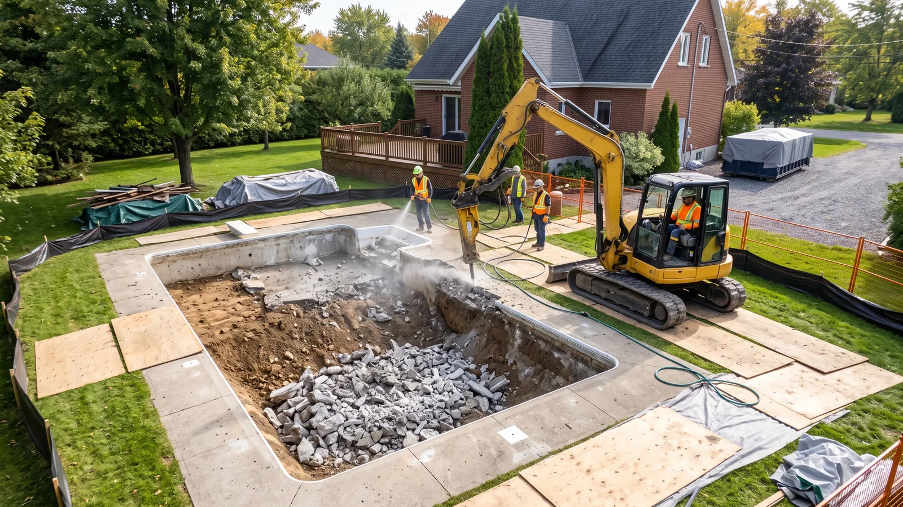
cities · saint-jean-sur-richelieuretrait contrôlé d'une piscine résidentielle, cour protégée et terrain propre à Saint-Jean-sur-Richelieu. Photographie documentaire haut de gamme, démolition résidentielle québécoise réaliste, chantier propre et calme, proportions crédibles, lumière naturelle, composition horizontale 16:9, aucun texte lisible, aucun logo, aucune adresse, aucune explosion, aucun effondrement, aucun travailleur sans équipement de protection.
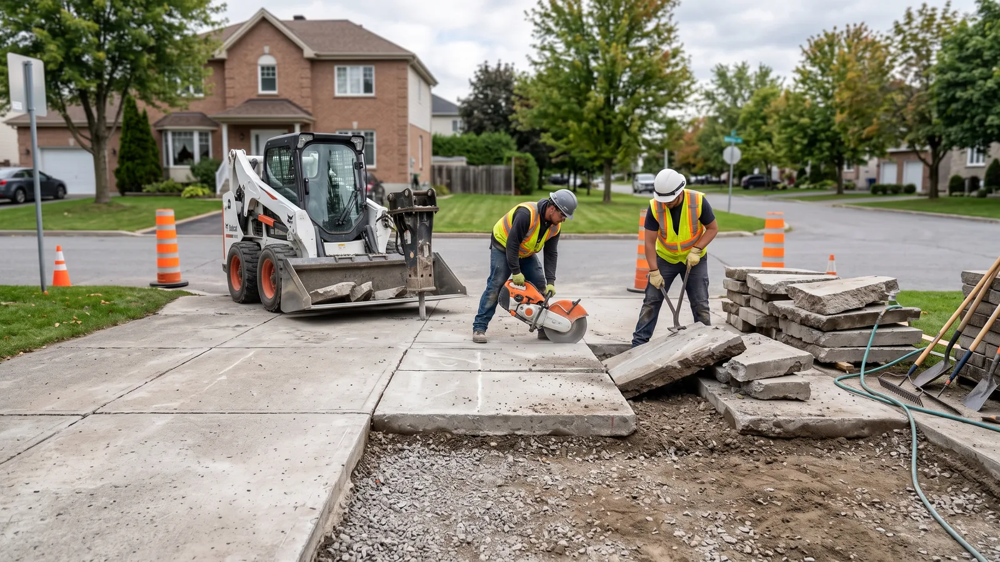
cities · brossardretrait d'une dalle de béton résidentielle, sections découpées et chantier ordonné à Brossard. Photographie documentaire haut de gamme, démolition résidentielle québécoise réaliste, chantier propre et calme, proportions crédibles, lumière naturelle, composition horizontale 16:9, aucun texte lisible, aucun logo, aucune adresse, aucune explosion, aucun effondrement, aucun travailleur sans équipement de protection.
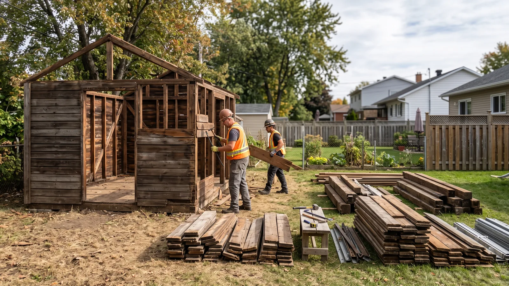
cities · saint-hyacinthedémontage prudent d'une remise en bois, matériaux récupérables empilés proprement à Saint-Hyacinthe. Photographie documentaire haut de gamme, démolition résidentielle québécoise réaliste, chantier propre et calme, proportions crédibles, lumière naturelle, composition horizontale 16:9, aucun texte lisible, aucun logo, aucune adresse, aucune explosion, aucun effondrement, aucun travailleur sans équipement de protection.
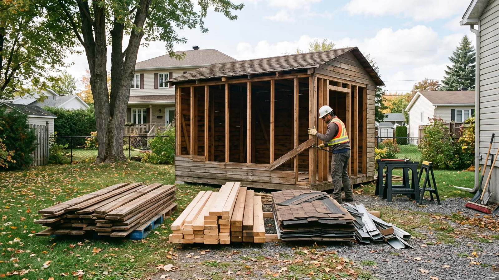
cities · chateauguaydémontage prudent d'une remise en bois, matériaux récupérables empilés proprement à Châteauguay. Photographie documentaire haut de gamme, démolition résidentielle québécoise réaliste, chantier propre et calme, proportions crédibles, lumière naturelle, composition horizontale 16:9, aucun texte lisible, aucun logo, aucune adresse, aucune explosion, aucun effondrement, aucun travailleur sans équipement de protection.
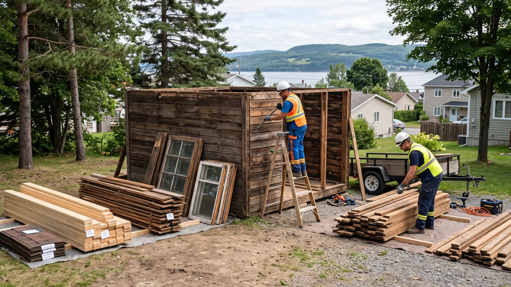
cities · rimouskidémontage prudent d'une remise en bois, matériaux récupérables empilés proprement à Rimouski. Photographie documentaire haut de gamme, démolition résidentielle québécoise réaliste, chantier propre et calme, proportions crédibles, lumière naturelle, composition horizontale 16:9, aucun texte lisible, aucun logo, aucune adresse, aucune explosion, aucun effondrement, aucun travailleur sans équipement de protection.
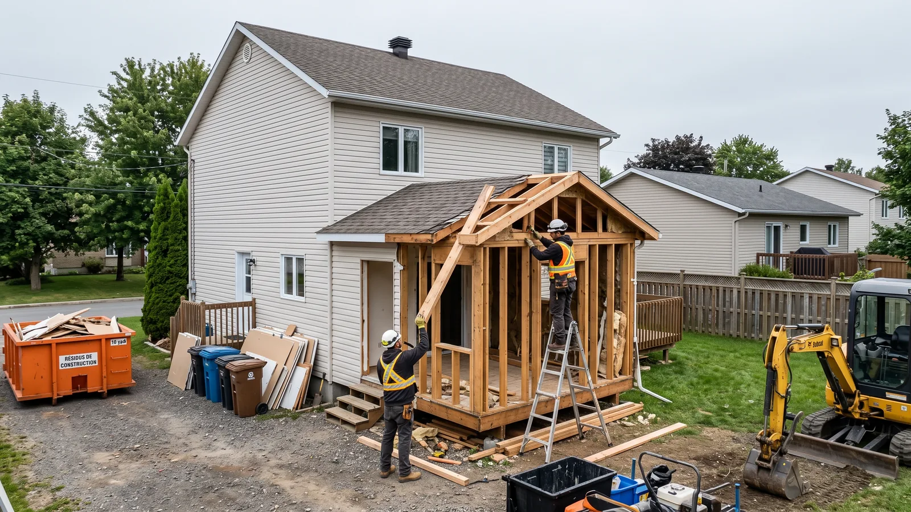
cities · victoriavilledémantèlement d'une petite annexe résidentielle, chantier calme et proportions réalistes à Victoriaville. Photographie documentaire haut de gamme, démolition résidentielle québécoise réaliste, chantier propre et calme, proportions crédibles, lumière naturelle, composition horizontale 16:9, aucun texte lisible, aucun logo, aucune adresse, aucune explosion, aucun effondrement, aucun travailleur sans équipement de protection.
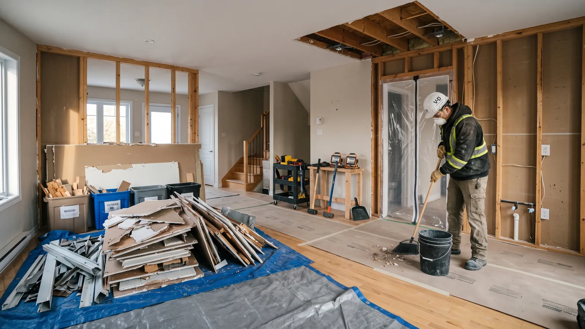
cities · vaudreuil-doriondémolition intérieure planifiée dans une maison, protections temporaires et débris regroupés à Vaudreuil-Dorion. Photographie documentaire haut de gamme, démolition résidentielle québécoise réaliste, chantier propre et calme, proportions crédibles, lumière naturelle, composition horizontale 16:9, aucun texte lisible, aucun logo, aucune adresse, aucune explosion, aucun effondrement, aucun travailleur sans équipement de protection.
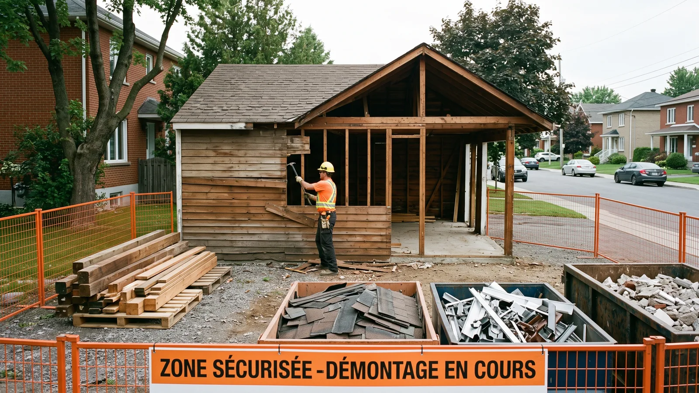
cities · salaberry-de-valleyfielddémontage contrôlé d'un garage résidentiel, matériaux triés et zone sécurisée à Salaberry-de-Valleyfield. Photographie documentaire haut de gamme, démolition résidentielle québécoise réaliste, chantier propre et calme, proportions crédibles, lumière naturelle, composition horizontale 16:9, aucun texte lisible, aucun logo, aucune adresse, aucune explosion, aucun effondrement, aucun travailleur sans équipement de protection.
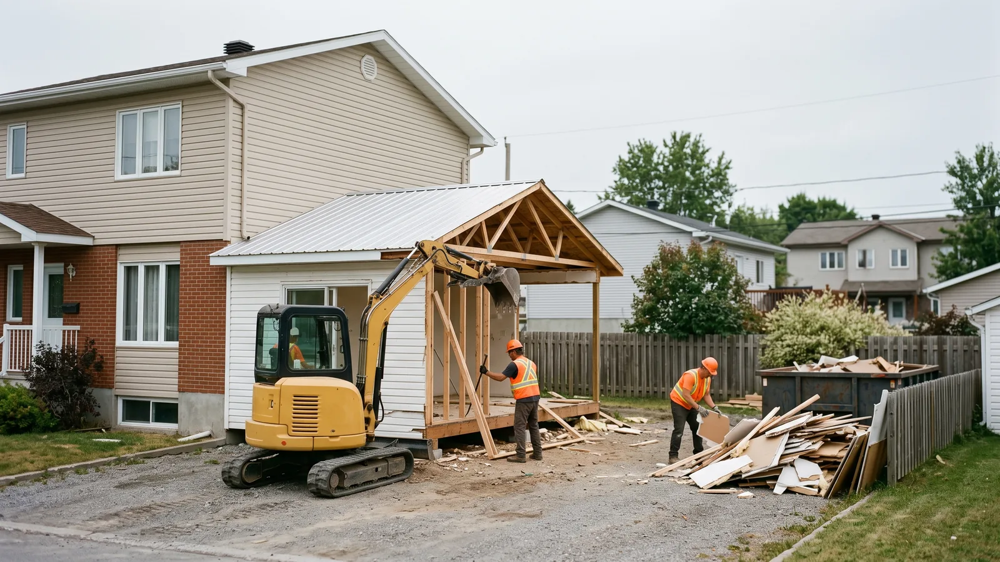
cities · rouyn-norandadémantèlement d'une petite annexe résidentielle, chantier calme et proportions réalistes à Rouyn-Noranda. Photographie documentaire haut de gamme, démolition résidentielle québécoise réaliste, chantier propre et calme, proportions crédibles, lumière naturelle, composition horizontale 16:9, aucun texte lisible, aucun logo, aucune adresse, aucune explosion, aucun effondrement, aucun travailleur sans équipement de protection.
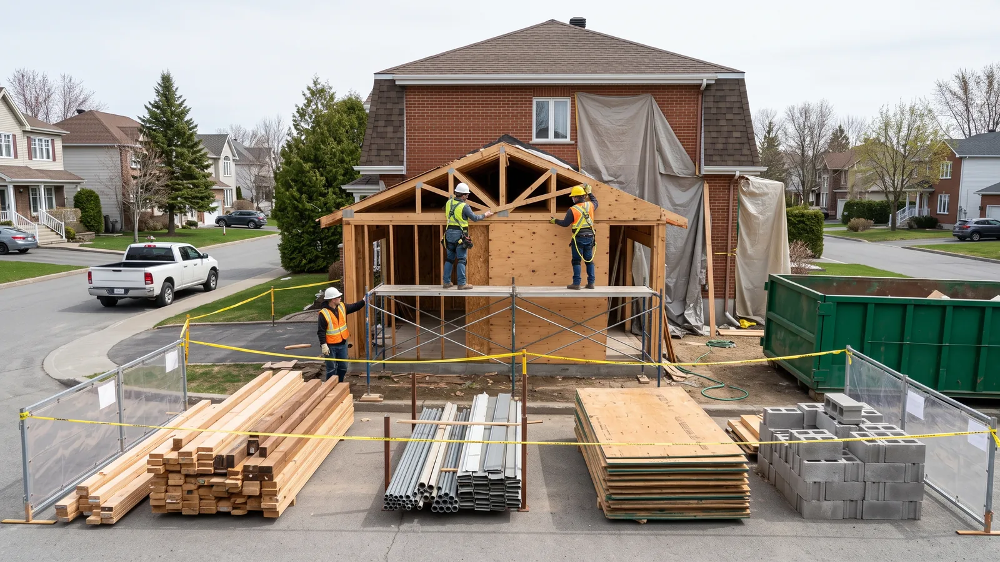
cities · bouchervilledémontage contrôlé d'un garage résidentiel, matériaux triés et zone sécurisée à Boucherville. Photographie documentaire haut de gamme, démolition résidentielle québécoise réaliste, chantier propre et calme, proportions crédibles, lumière naturelle, composition horizontale 16:9, aucun texte lisible, aucun logo, aucune adresse, aucune explosion, aucun effondrement, aucun travailleur sans équipement de protection.
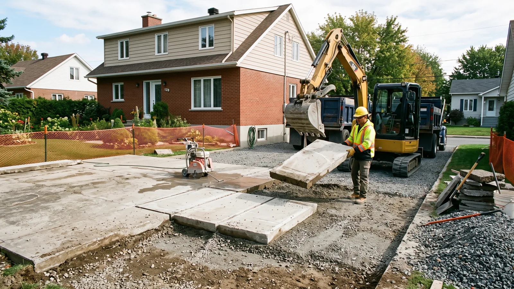
cities · saint-georgesretrait d'une dalle de béton résidentielle, sections découpées et chantier ordonné à Saint-Georges. Photographie documentaire haut de gamme, démolition résidentielle québécoise réaliste, chantier propre et calme, proportions crédibles, lumière naturelle, composition horizontale 16:9, aucun texte lisible, aucun logo, aucune adresse, aucune explosion, aucun effondrement, aucun travailleur sans équipement de protection.
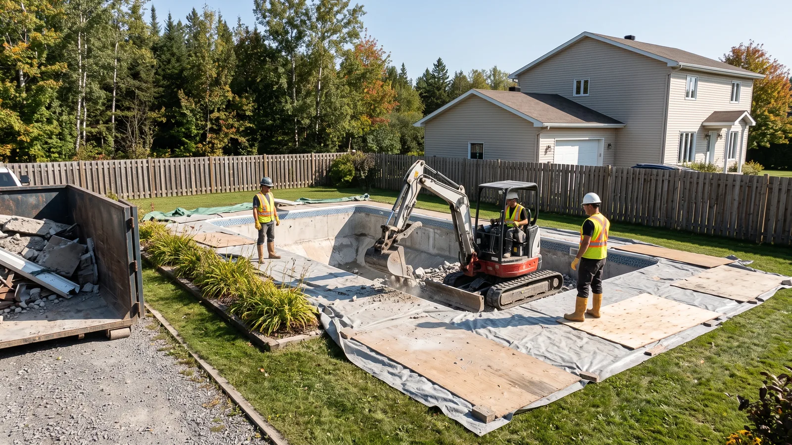
cities · val-d-orretrait contrôlé d'une piscine résidentielle, cour protégée et terrain propre à Val-d'Or. Photographie documentaire haut de gamme, démolition résidentielle québécoise réaliste, chantier propre et calme, proportions crédibles, lumière naturelle, composition horizontale 16:9, aucun texte lisible, aucun logo, aucune adresse, aucune explosion, aucun effondrement, aucun travailleur sans équipement de protection.
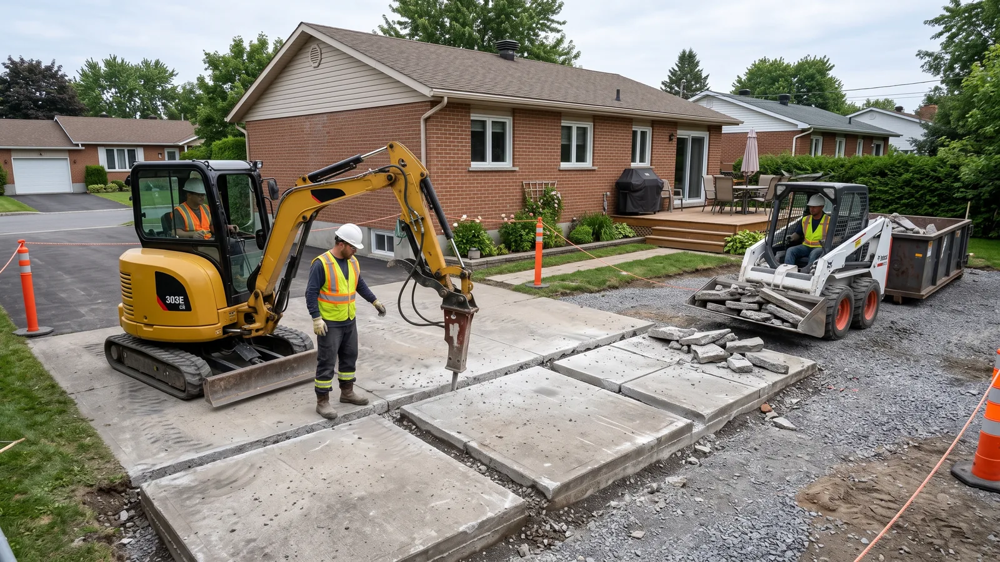
cities · chamblyretrait d'une dalle de béton résidentielle, sections découpées et chantier ordonné à Chambly. Photographie documentaire haut de gamme, démolition résidentielle québécoise réaliste, chantier propre et calme, proportions crédibles, lumière naturelle, composition horizontale 16:9, aucun texte lisible, aucun logo, aucune adresse, aucune explosion, aucun effondrement, aucun travailleur sans équipement de protection.
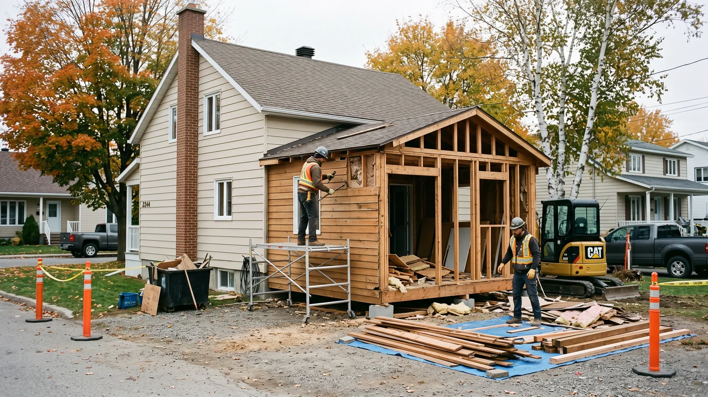
cities · almadémantèlement d'une petite annexe résidentielle, chantier calme et proportions réalistes à Alma. Photographie documentaire haut de gamme, démolition résidentielle québécoise réaliste, chantier propre et calme, proportions crédibles, lumière naturelle, composition horizontale 16:9, aucun texte lisible, aucun logo, aucune adresse, aucune explosion, aucun effondrement, aucun travailleur sans équipement de protection.
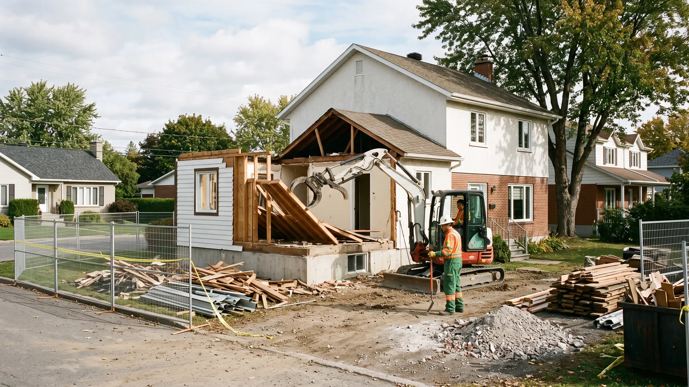
cities · sainte-juliedémantèlement d'une petite annexe résidentielle, chantier calme et proportions réalistes à Sainte-Julie. Photographie documentaire haut de gamme, démolition résidentielle québécoise réaliste, chantier propre et calme, proportions crédibles, lumière naturelle, composition horizontale 16:9, aucun texte lisible, aucun logo, aucune adresse, aucune explosion, aucun effondrement, aucun travailleur sans équipement de protection.
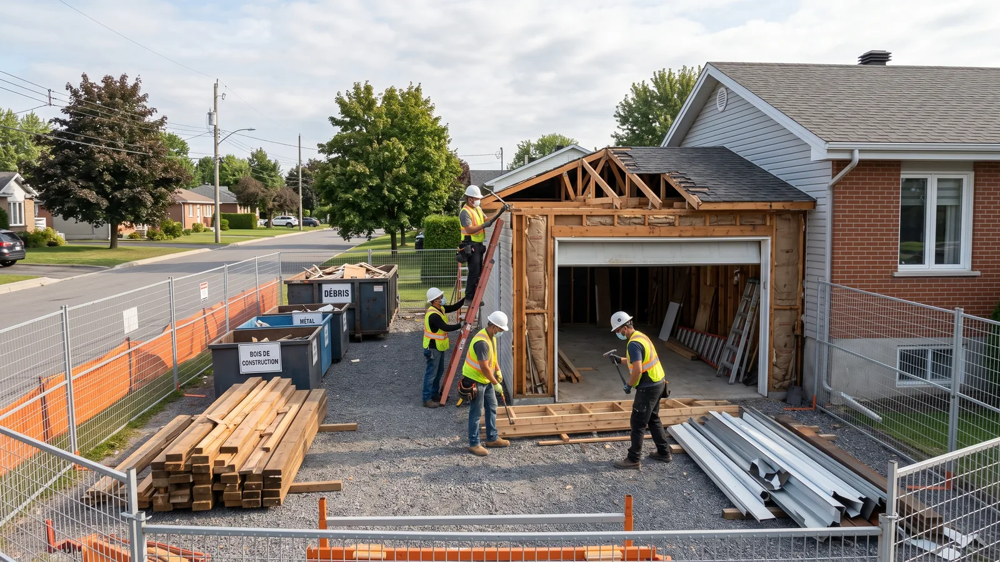
cities · saint-constantdémontage contrôlé d'un garage résidentiel, matériaux triés et zone sécurisée à Saint-Constant. Photographie documentaire haut de gamme, démolition résidentielle québécoise réaliste, chantier propre et calme, proportions crédibles, lumière naturelle, composition horizontale 16:9, aucun texte lisible, aucun logo, aucune adresse, aucune explosion, aucun effondrement, aucun travailleur sans équipement de protection.
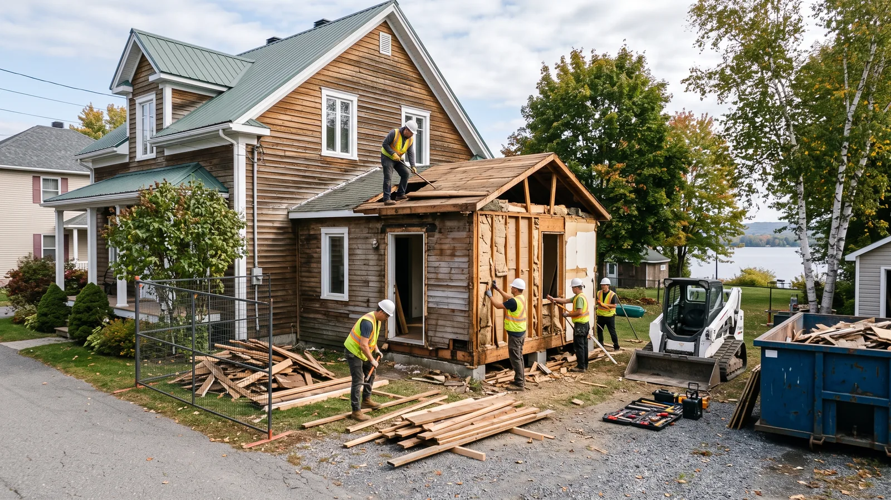
cities · magogdémantèlement d'une petite annexe résidentielle, chantier calme et proportions réalistes à Magog. Photographie documentaire haut de gamme, démolition résidentielle québécoise réaliste, chantier propre et calme, proportions crédibles, lumière naturelle, composition horizontale 16:9, aucun texte lisible, aucun logo, aucune adresse, aucune explosion, aucun effondrement, aucun travailleur sans équipement de protection.
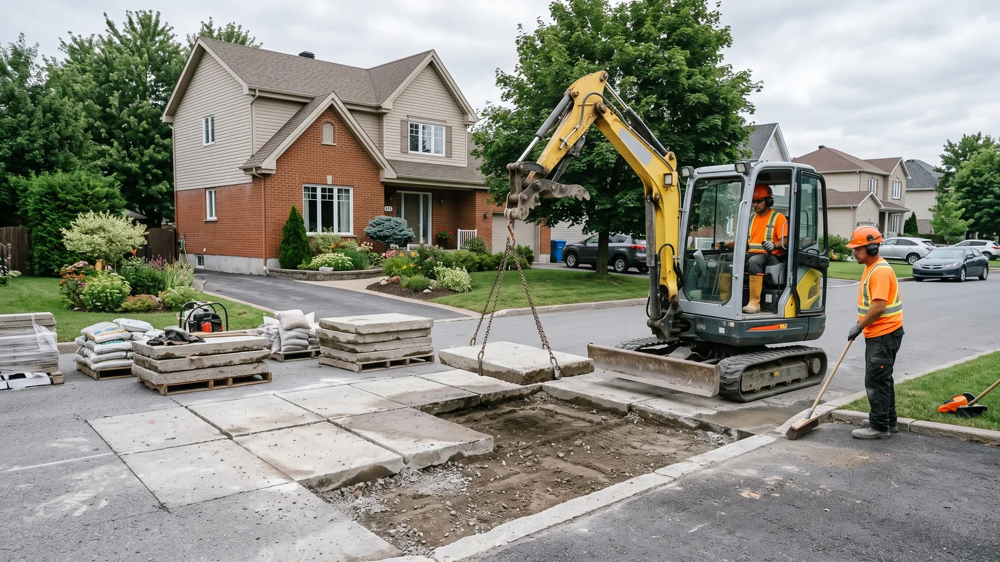
cities · boisbriandretrait d'une dalle de béton résidentielle, sections découpées et chantier ordonné à Boisbriand. Photographie documentaire haut de gamme, démolition résidentielle québécoise réaliste, chantier propre et calme, proportions crédibles, lumière naturelle, composition horizontale 16:9, aucun texte lisible, aucun logo, aucune adresse, aucune explosion, aucun effondrement, aucun travailleur sans équipement de protection.
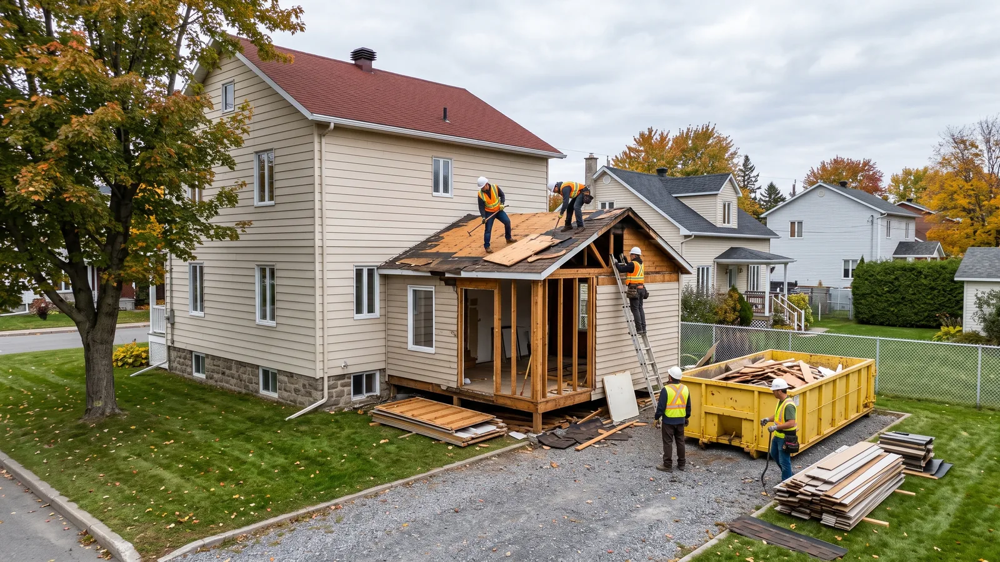
cities · sainte-theresedémantèlement d'une petite annexe résidentielle, chantier calme et proportions réalistes à Sainte-Thérèse. Photographie documentaire haut de gamme, démolition résidentielle québécoise réaliste, chantier propre et calme, proportions crédibles, lumière naturelle, composition horizontale 16:9, aucun texte lisible, aucun logo, aucune adresse, aucune explosion, aucun effondrement, aucun travailleur sans équipement de protection.
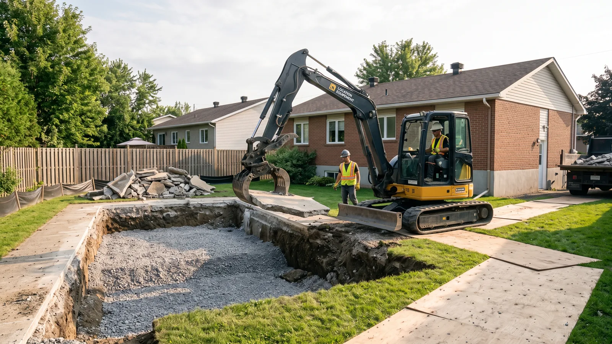
cities · la-prairieretrait contrôlé d'une piscine résidentielle, cour protégée et terrain propre à La Prairie. Photographie documentaire haut de gamme, démolition résidentielle québécoise réaliste, chantier propre et calme, proportions crédibles, lumière naturelle, composition horizontale 16:9, aucun texte lisible, aucun logo, aucune adresse, aucune explosion, aucun effondrement, aucun travailleur sans équipement de protection.
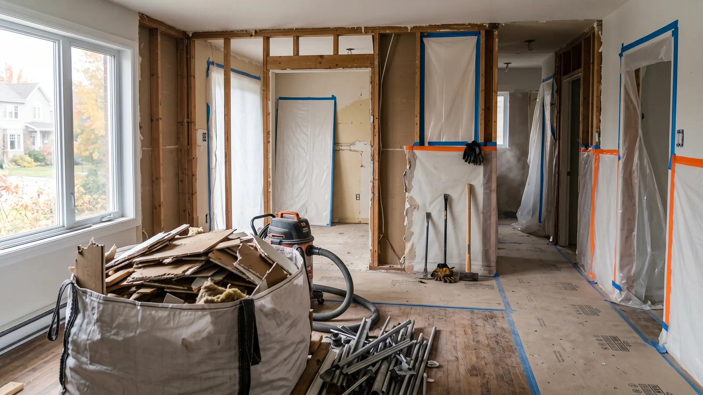
cities · beloeildémolition intérieure planifiée dans une maison, protections temporaires et débris regroupés à Beloeil. Photographie documentaire haut de gamme, démolition résidentielle québécoise réaliste, chantier propre et calme, proportions crédibles, lumière naturelle, composition horizontale 16:9, aucun texte lisible, aucun logo, aucune adresse, aucune explosion, aucun effondrement, aucun travailleur sans équipement de protection.
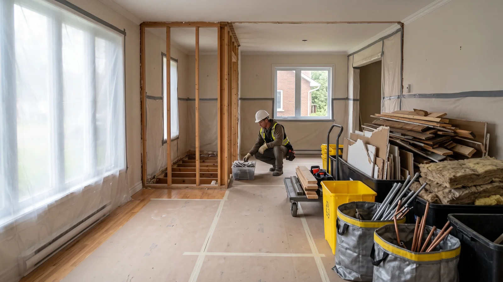
cities · l-assomptiondémolition intérieure planifiée dans une maison, protections temporaires et débris regroupés à L'Assomption. Photographie documentaire haut de gamme, démolition résidentielle québécoise réaliste, chantier propre et calme, proportions crédibles, lumière naturelle, composition horizontale 16:9, aucun texte lisible, aucun logo, aucune adresse, aucune explosion, aucun effondrement, aucun travailleur sans équipement de protection.
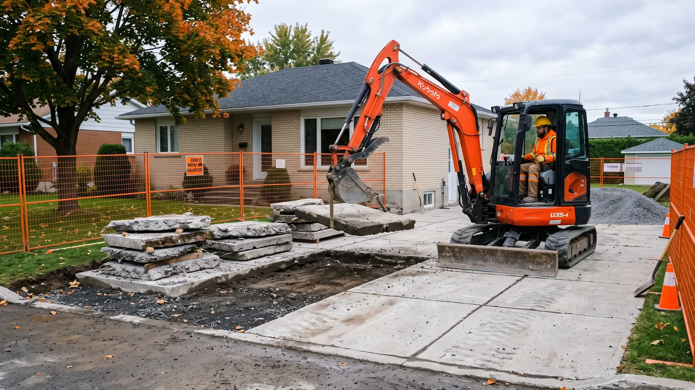
cities · candiacretrait d'une dalle de béton résidentielle, sections découpées et chantier ordonné à Candiac. Photographie documentaire haut de gamme, démolition résidentielle québécoise réaliste, chantier propre et calme, proportions crédibles, lumière naturelle, composition horizontale 16:9, aucun texte lisible, aucun logo, aucune adresse, aucune explosion, aucun effondrement, aucun travailleur sans équipement de protection.
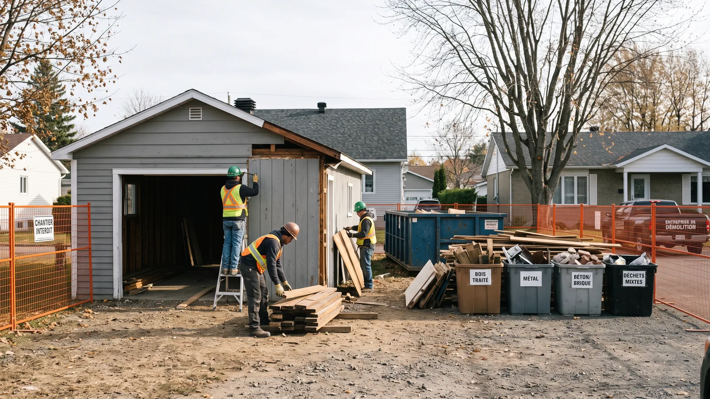
cities · joliettedémontage contrôlé d'un garage résidentiel, matériaux triés et zone sécurisée à Joliette. Photographie documentaire haut de gamme, démolition résidentielle québécoise réaliste, chantier propre et calme, proportions crédibles, lumière naturelle, composition horizontale 16:9, aucun texte lisible, aucun logo, aucune adresse, aucune explosion, aucun effondrement, aucun travailleur sans équipement de protection.
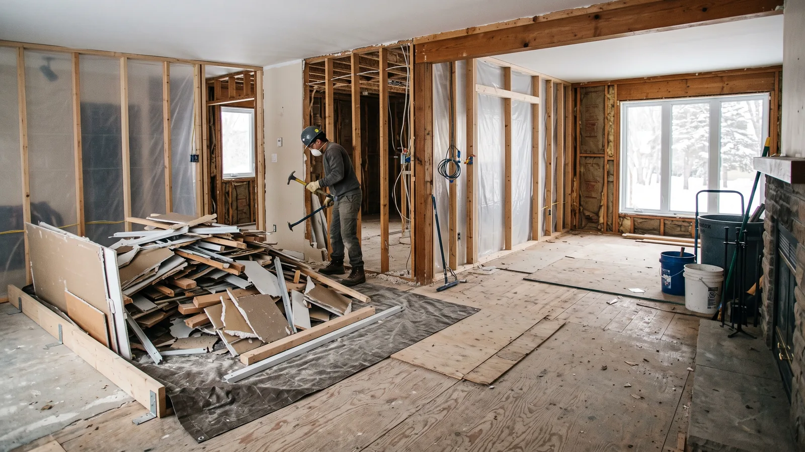
cities · varennesdémolition intérieure planifiée dans une maison, protections temporaires et débris regroupés à Varennes. Photographie documentaire haut de gamme, démolition résidentielle québécoise réaliste, chantier propre et calme, proportions crédibles, lumière naturelle, composition horizontale 16:9, aucun texte lisible, aucun logo, aucune adresse, aucune explosion, aucun effondrement, aucun travailleur sans équipement de protection.
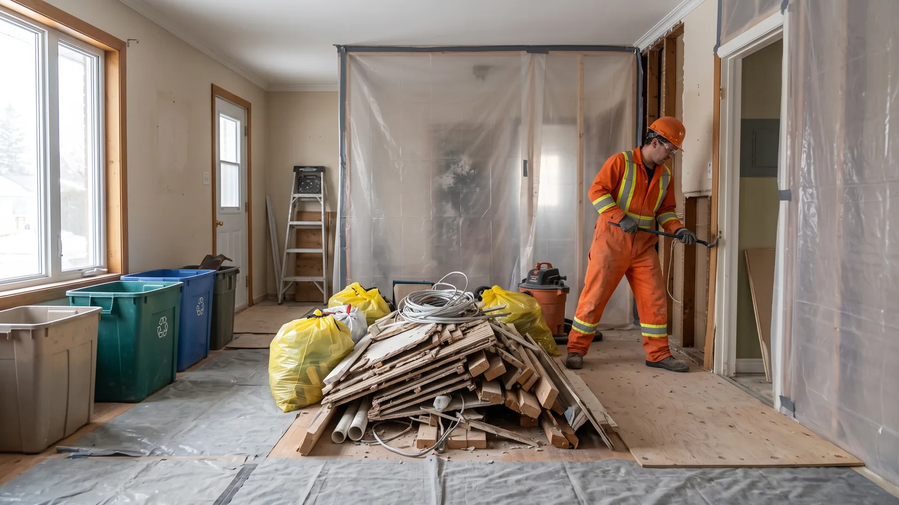
cities · riviere-du-loupdémolition intérieure planifiée dans une maison, protections temporaires et débris regroupés à Rivière-du-Loup. Photographie documentaire haut de gamme, démolition résidentielle québécoise réaliste, chantier propre et calme, proportions crédibles, lumière naturelle, composition horizontale 16:9, aucun texte lisible, aucun logo, aucune adresse, aucune explosion, aucun effondrement, aucun travailleur sans équipement de protection.
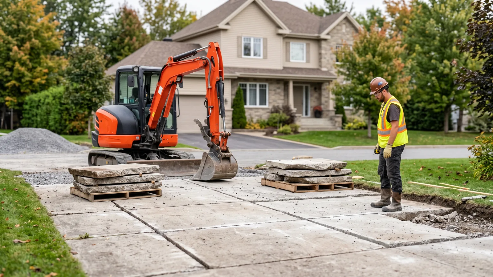
cities · saint-augustin-de-desmauresretrait d'une dalle de béton résidentielle, sections découpées et chantier ordonné à Saint-Augustin-de-Desmaures. Photographie documentaire haut de gamme, démolition résidentielle québécoise réaliste, chantier propre et calme, proportions crédibles, lumière naturelle, composition horizontale 16:9, aucun texte lisible, aucun logo, aucune adresse, aucune explosion, aucun effondrement, aucun travailleur sans équipement de protection.
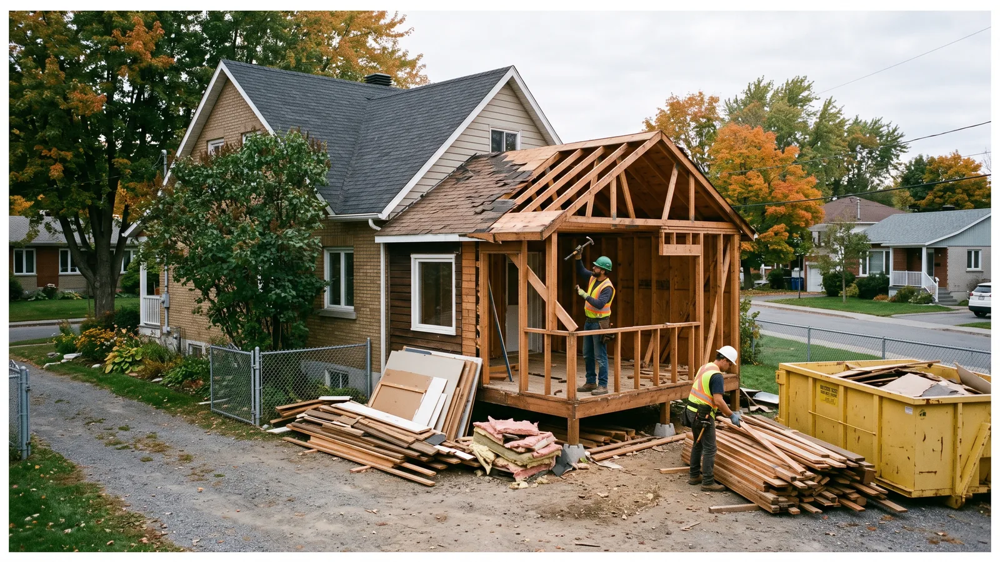
cities · sainte-marthe-sur-le-lacdémantèlement d'une petite annexe résidentielle, chantier calme et proportions réalistes à Sainte-Marthe-sur-le-Lac. Photographie documentaire haut de gamme, démolition résidentielle québécoise réaliste, chantier propre et calme, proportions crédibles, lumière naturelle, composition horizontale 16:9, aucun texte lisible, aucun logo, aucune adresse, aucune explosion, aucun effondrement, aucun travailleur sans équipement de protection.
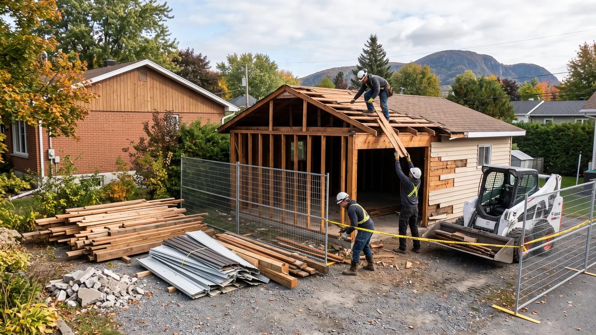
cities · mont-saint-hilairedémontage contrôlé d'un garage résidentiel, matériaux triés et zone sécurisée à Mont-Saint-Hilaire. Photographie documentaire haut de gamme, démolition résidentielle québécoise réaliste, chantier propre et calme, proportions crédibles, lumière naturelle, composition horizontale 16:9, aucun texte lisible, aucun logo, aucune adresse, aucune explosion, aucun effondrement, aucun travailleur sans équipement de protection.
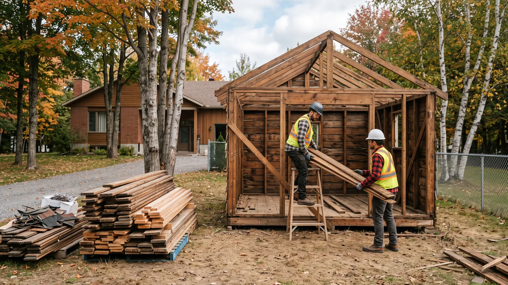
cities · sainte-sophiedémontage prudent d'une remise en bois, matériaux récupérables empilés proprement à Sainte-Sophie. Photographie documentaire haut de gamme, démolition résidentielle québécoise réaliste, chantier propre et calme, proportions crédibles, lumière naturelle, composition horizontale 16:9, aucun texte lisible, aucun logo, aucune adresse, aucune explosion, aucun effondrement, aucun travailleur sans équipement de protection.
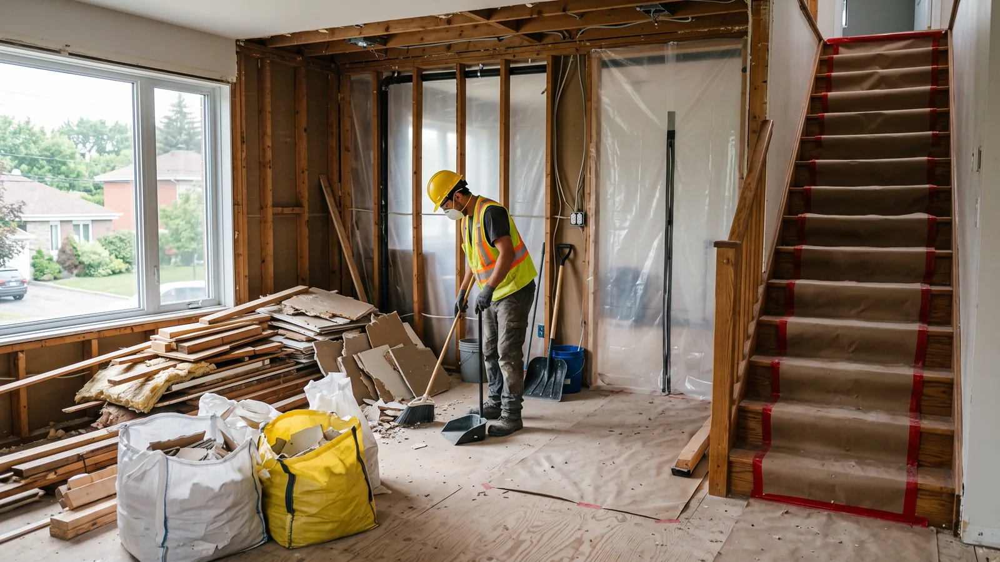
cities · deux-montagnesdémolition intérieure planifiée dans une maison, protections temporaires et débris regroupés à Deux-Montagnes. Photographie documentaire haut de gamme, démolition résidentielle québécoise réaliste, chantier propre et calme, proportions crédibles, lumière naturelle, composition horizontale 16:9, aucun texte lisible, aucun logo, aucune adresse, aucune explosion, aucun effondrement, aucun travailleur sans équipement de protection.
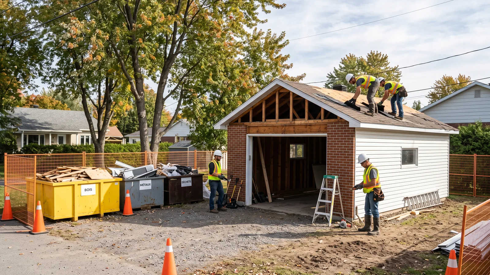
cities · saint-colombandémontage contrôlé d'un garage résidentiel, matériaux triés et zone sécurisée à Saint-Colomban. Photographie documentaire haut de gamme, démolition résidentielle québécoise réaliste, chantier propre et calme, proportions crédibles, lumière naturelle, composition horizontale 16:9, aucun texte lisible, aucun logo, aucune adresse, aucune explosion, aucun effondrement, aucun travailleur sans équipement de protection.
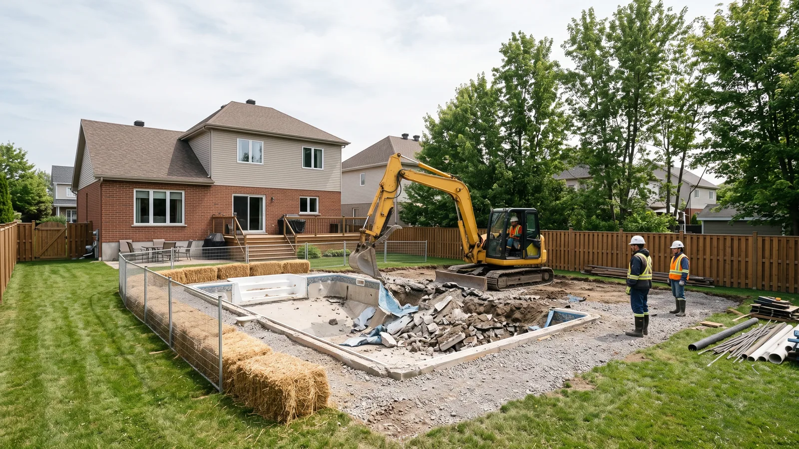
cities · sainte-catherineretrait contrôlé d'une piscine résidentielle, cour protégée et terrain propre à Sainte-Catherine. Photographie documentaire haut de gamme, démolition résidentielle québécoise réaliste, chantier propre et calme, proportions crédibles, lumière naturelle, composition horizontale 16:9, aucun texte lisible, aucun logo, aucune adresse, aucune explosion, aucun effondrement, aucun travailleur sans équipement de protection.
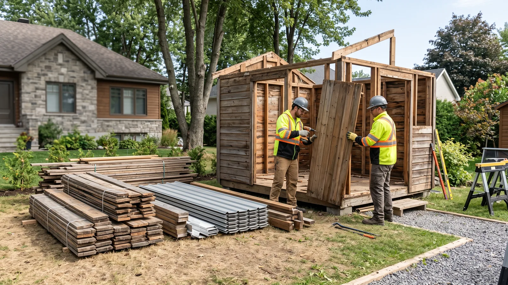
cities · saint-basile-le-granddémontage prudent d'une remise en bois, matériaux récupérables empilés proprement à Saint-Basile-le-Grand. Photographie documentaire haut de gamme, démolition résidentielle québécoise réaliste, chantier propre et calme, proportions crédibles, lumière naturelle, composition horizontale 16:9, aucun texte lisible, aucun logo, aucune adresse, aucune explosion, aucun effondrement, aucun travailleur sans équipement de protection.
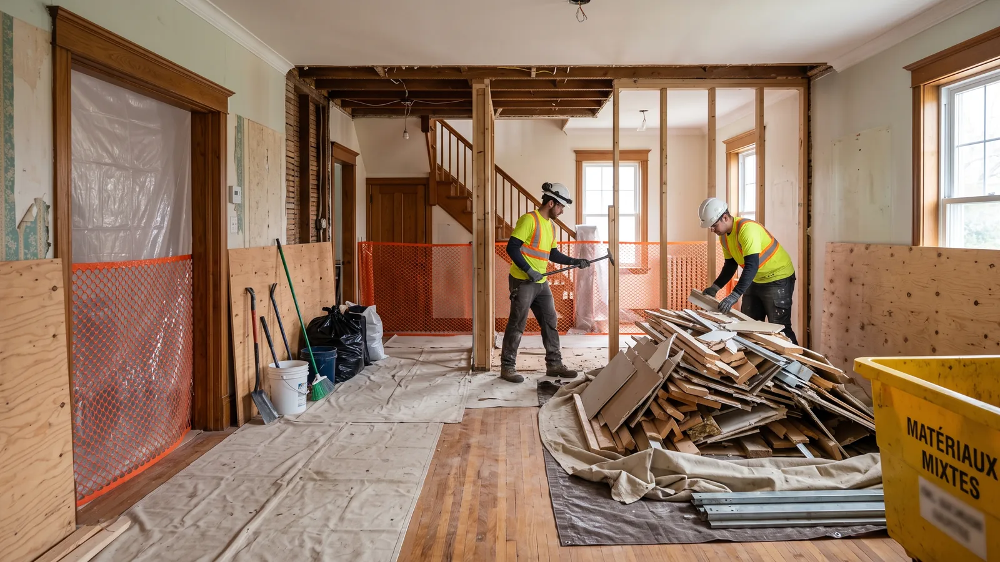
cities · l-ancienne-lorettedémolition intérieure planifiée dans une maison, protections temporaires et débris regroupés à L'Ancienne-Lorette. Photographie documentaire haut de gamme, démolition résidentielle québécoise réaliste, chantier propre et calme, proportions crédibles, lumière naturelle, composition horizontale 16:9, aucun texte lisible, aucun logo, aucune adresse, aucune explosion, aucun effondrement, aucun travailleur sans équipement de protection.
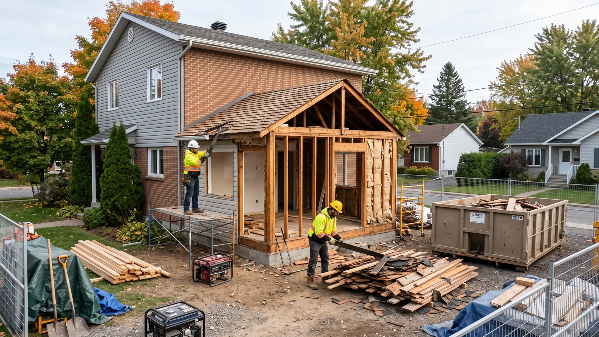
cities · saint-charles-borromeedémantèlement d'une petite annexe résidentielle, chantier calme et proportions réalistes à Saint-Charles-Borromée. Photographie documentaire haut de gamme, démolition résidentielle québécoise réaliste, chantier propre et calme, proportions crédibles, lumière naturelle, composition horizontale 16:9, aucun texte lisible, aucun logo, aucune adresse, aucune explosion, aucun effondrement, aucun travailleur sans équipement de protection.
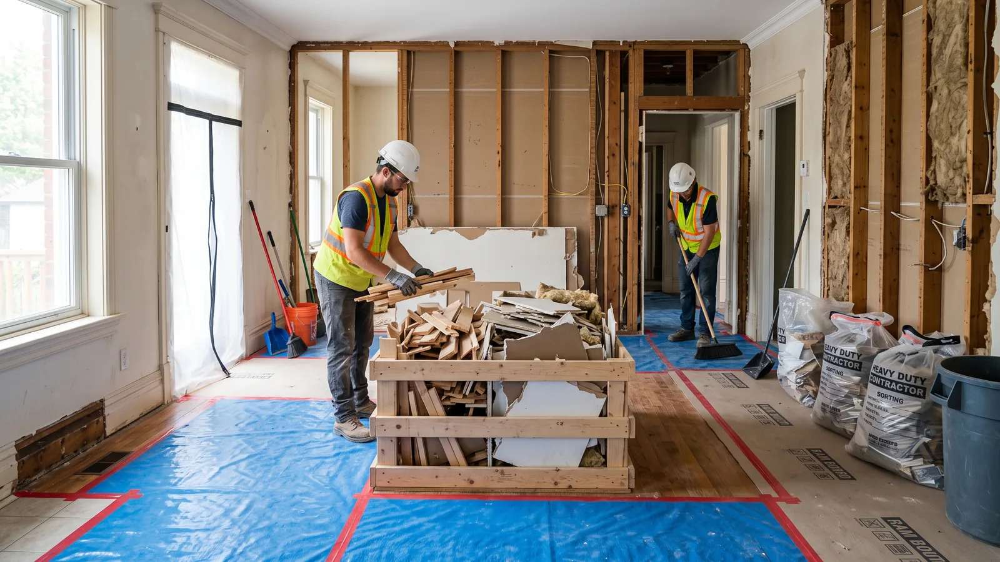
cities · cowansvilledémolition intérieure planifiée dans une maison, protections temporaires et débris regroupés à Cowansville. Photographie documentaire haut de gamme, démolition résidentielle québécoise réaliste, chantier propre et calme, proportions crédibles, lumière naturelle, composition horizontale 16:9, aucun texte lisible, aucun logo, aucune adresse, aucune explosion, aucun effondrement, aucun travailleur sans équipement de protection.
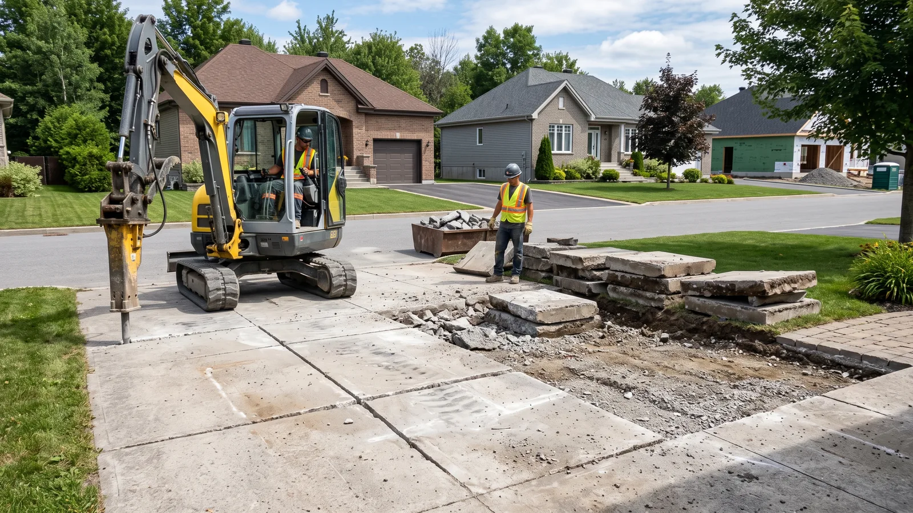
cities · sainte-anne-des-plainesretrait d'une dalle de béton résidentielle, sections découpées et chantier ordonné à Sainte-Anne-des-Plaines. Photographie documentaire haut de gamme, démolition résidentielle québécoise réaliste, chantier propre et calme, proportions crédibles, lumière naturelle, composition horizontale 16:9, aucun texte lisible, aucun logo, aucune adresse, aucune explosion, aucun effondrement, aucun travailleur sans équipement de protection.
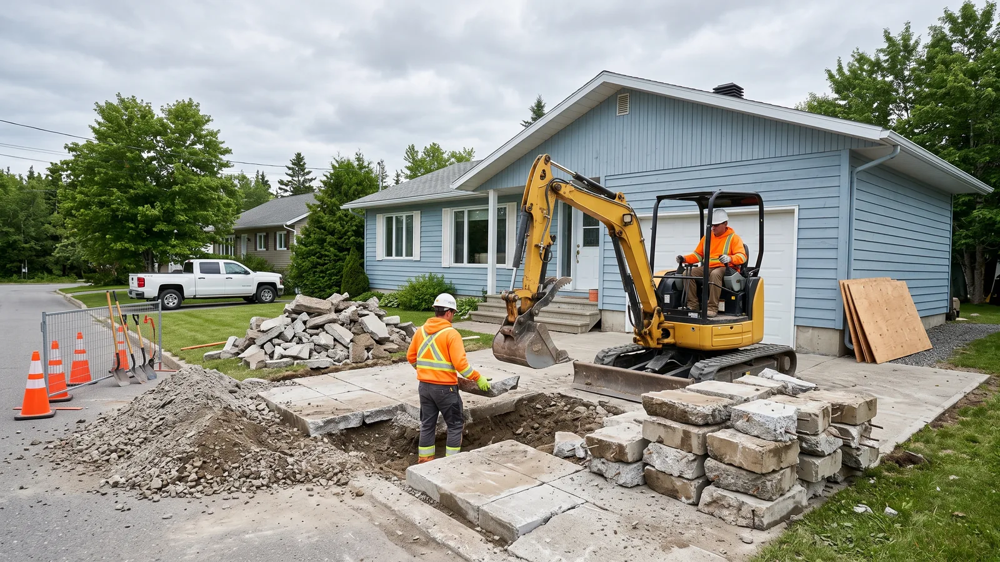
cities · gasperetrait d'une dalle de béton résidentielle, sections découpées et chantier ordonné à Gaspé. Photographie documentaire haut de gamme, démolition résidentielle québécoise réaliste, chantier propre et calme, proportions crédibles, lumière naturelle, composition horizontale 16:9, aucun texte lisible, aucun logo, aucune adresse, aucune explosion, aucun effondrement, aucun travailleur sans équipement de protection.
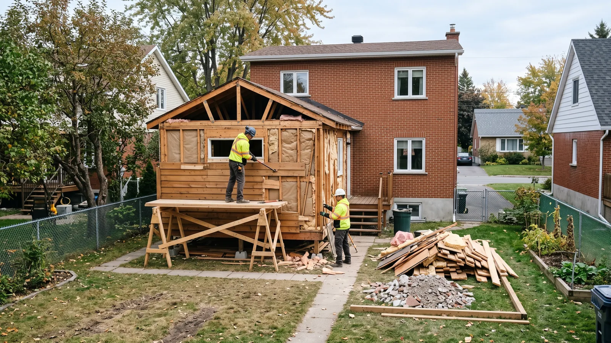
cities · pincourtdémantèlement d'une petite annexe résidentielle, chantier calme et proportions réalistes à Pincourt. Photographie documentaire haut de gamme, démolition résidentielle québécoise réaliste, chantier propre et calme, proportions crédibles, lumière naturelle, composition horizontale 16:9, aucun texte lisible, aucun logo, aucune adresse, aucune explosion, aucun effondrement, aucun travailleur sans équipement de protection.
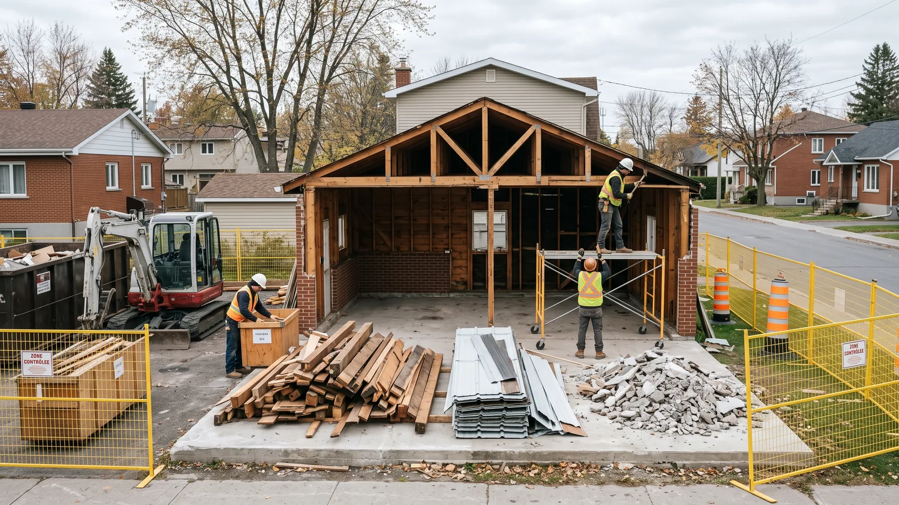
cities · mercierdémontage contrôlé d'un garage résidentiel, matériaux triés et zone sécurisée à Mercier. Photographie documentaire haut de gamme, démolition résidentielle québécoise réaliste, chantier propre et calme, proportions crédibles, lumière naturelle, composition horizontale 16:9, aucun texte lisible, aucun logo, aucune adresse, aucune explosion, aucun effondrement, aucun travailleur sans équipement de protection.
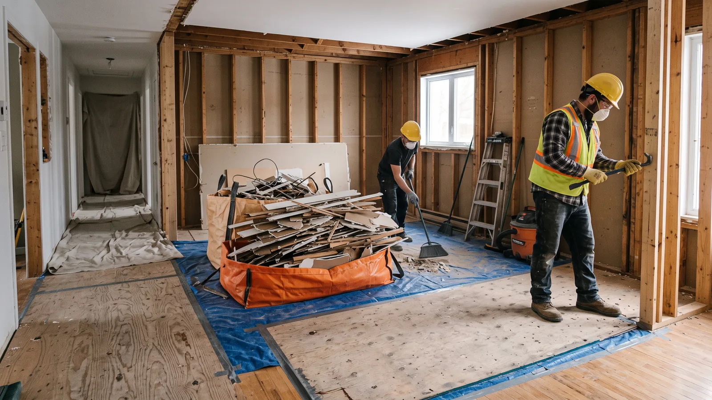
cities · lavaltriedémolition intérieure planifiée dans une maison, protections temporaires et débris regroupés à Lavaltrie. Photographie documentaire haut de gamme, démolition résidentielle québécoise réaliste, chantier propre et calme, proportions crédibles, lumière naturelle, composition horizontale 16:9, aucun texte lisible, aucun logo, aucune adresse, aucune explosion, aucun effondrement, aucun travailleur sans équipement de protection.
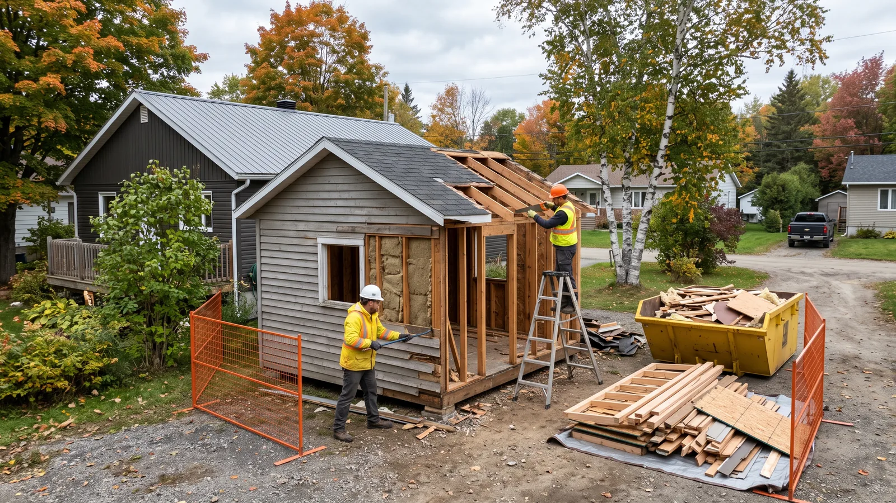
cities · mont-laurierdémantèlement d'une petite annexe résidentielle, chantier calme et proportions réalistes à Mont-Laurier. Photographie documentaire haut de gamme, démolition résidentielle québécoise réaliste, chantier propre et calme, proportions crédibles, lumière naturelle, composition horizontale 16:9, aucun texte lisible, aucun logo, aucune adresse, aucune explosion, aucun effondrement, aucun travailleur sans équipement de protection.
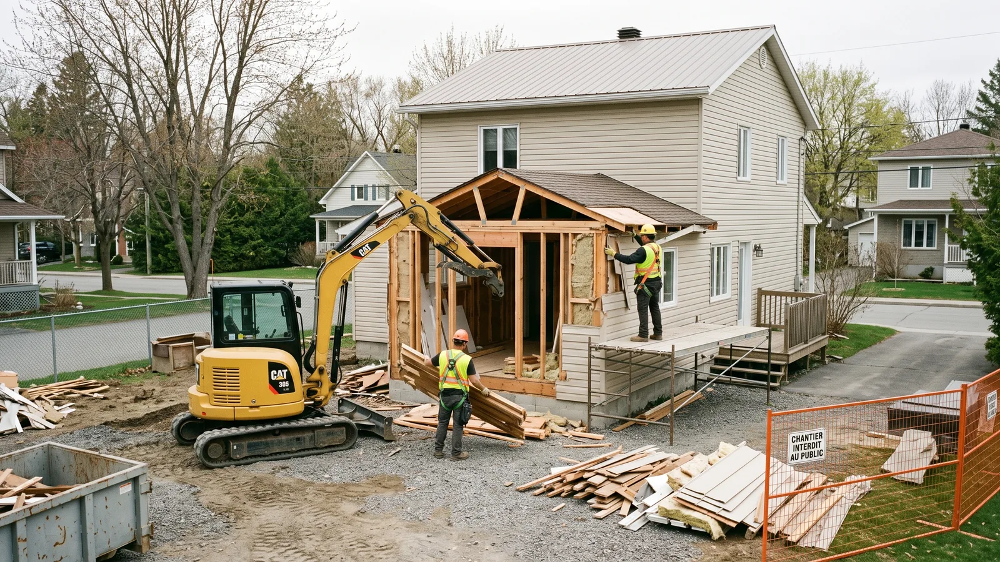
cities · lachutedémantèlement d'une petite annexe résidentielle, chantier calme et proportions réalistes à Lachute. Photographie documentaire haut de gamme, démolition résidentielle québécoise réaliste, chantier propre et calme, proportions crédibles, lumière naturelle, composition horizontale 16:9, aucun texte lisible, aucun logo, aucune adresse, aucune explosion, aucun effondrement, aucun travailleur sans équipement de protection.
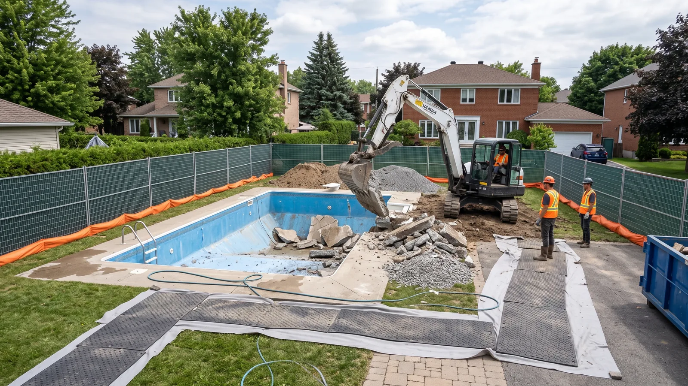
cities · rosemereretrait contrôlé d'une piscine résidentielle, cour protégée et terrain propre à Rosemère. Photographie documentaire haut de gamme, démolition résidentielle québécoise réaliste, chantier propre et calme, proportions crédibles, lumière naturelle, composition horizontale 16:9, aucun texte lisible, aucun logo, aucune adresse, aucune explosion, aucun effondrement, aucun travailleur sans équipement de protection.
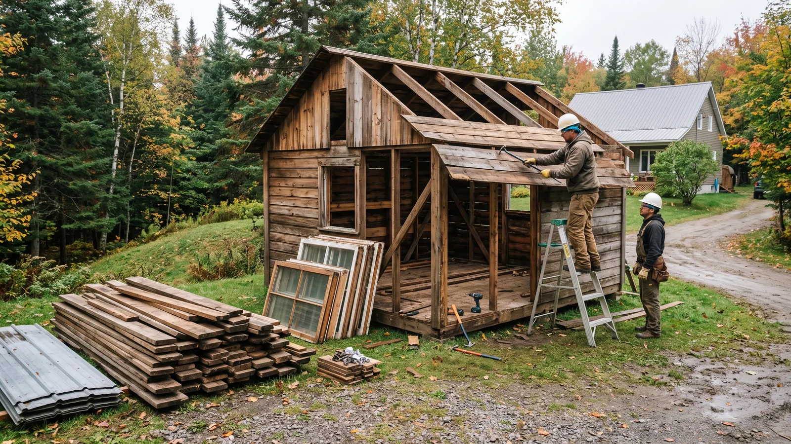
cities · sainte-adeledémontage prudent d'une remise en bois, matériaux récupérables empilés proprement à Sainte-Adèle. Photographie documentaire haut de gamme, démolition résidentielle québécoise réaliste, chantier propre et calme, proportions crédibles, lumière naturelle, composition horizontale 16:9, aucun texte lisible, aucun logo, aucune adresse, aucune explosion, aucun effondrement, aucun travailleur sans équipement de protection.
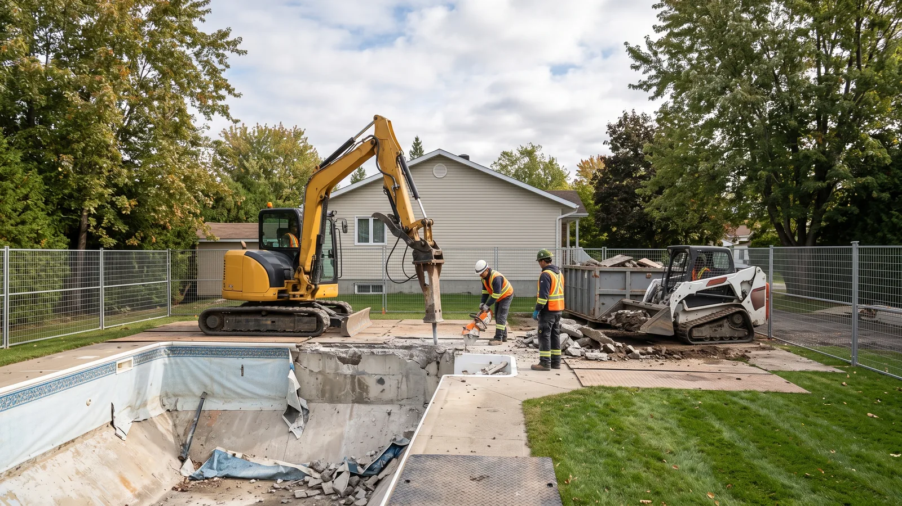
cities · dolbeau-mistassiniretrait contrôlé d'une piscine résidentielle, cour protégée et terrain propre à Dolbeau-Mistassini. Photographie documentaire haut de gamme, démolition résidentielle québécoise réaliste, chantier propre et calme, proportions crédibles, lumière naturelle, composition horizontale 16:9, aucun texte lisible, aucun logo, aucune adresse, aucune explosion, aucun effondrement, aucun travailleur sans équipement de protection.
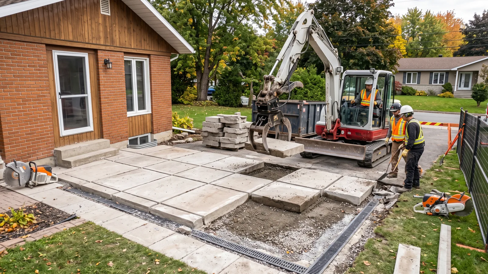
cities · prevostretrait d'une dalle de béton résidentielle, sections découpées et chantier ordonné à Prévost. Photographie documentaire haut de gamme, démolition résidentielle québécoise réaliste, chantier propre et calme, proportions crédibles, lumière naturelle, composition horizontale 16:9, aucun texte lisible, aucun logo, aucune adresse, aucune explosion, aucun effondrement, aucun travailleur sans équipement de protection.
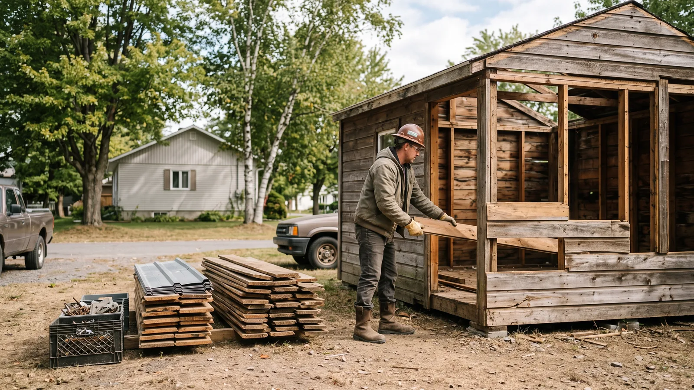
cities · beauharnoisdémontage prudent d'une remise en bois, matériaux récupérables empilés proprement à Beauharnois. Photographie documentaire haut de gamme, démolition résidentielle québécoise réaliste, chantier propre et calme, proportions crédibles, lumière naturelle, composition horizontale 16:9, aucun texte lisible, aucun logo, aucune adresse, aucune explosion, aucun effondrement, aucun travailleur sans équipement de protection.
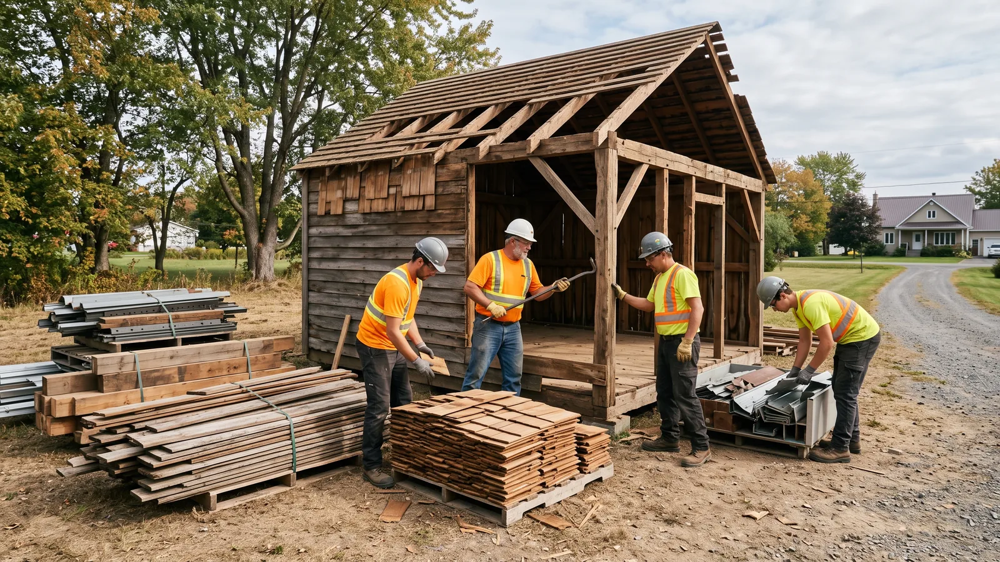
cities · becancourdémontage prudent d'une remise en bois, matériaux récupérables empilés proprement à Bécancour. Photographie documentaire haut de gamme, démolition résidentielle québécoise réaliste, chantier propre et calme, proportions crédibles, lumière naturelle, composition horizontale 16:9, aucun texte lisible, aucun logo, aucune adresse, aucune explosion, aucun effondrement, aucun travailleur sans équipement de protection.
cities · val-des-montsdémantèlement d'une petite annexe résidentielle, chantier calme et proportions réalistes à Val-des-Monts. Photographie documentaire haut de gamme, démolition résidentielle québécoise réaliste, chantier propre et calme, proportions crédibles, lumière naturelle, composition horizontale 16:9, aucun texte lisible, aucun logo, aucune adresse, aucune explosion, aucun effondrement, aucun travailleur sans équipement de protection.
cities · saint-amabledémolition intérieure planifiée dans une maison, protections temporaires et débris regroupés à Saint-Amable. Photographie documentaire haut de gamme, démolition résidentielle québécoise réaliste, chantier propre et calme, proportions crédibles, lumière naturelle, composition horizontale 16:9, aucun texte lisible, aucun logo, aucune adresse, aucune explosion, aucun effondrement, aucun travailleur sans équipement de protection.
cities · sainte-mariedémolition intérieure planifiée dans une maison, protections temporaires et débris regroupés à Sainte-Marie. Photographie documentaire haut de gamme, démolition résidentielle québécoise réaliste, chantier propre et calme, proportions crédibles, lumière naturelle, composition horizontale 16:9, aucun texte lisible, aucun logo, aucune adresse, aucune explosion, aucun effondrement, aucun travailleur sans équipement de protection.
cities · amosdémontage contrôlé d'un garage résidentiel, matériaux triés et zone sécurisée à Amos. Photographie documentaire haut de gamme, démolition résidentielle québécoise réaliste, chantier propre et calme, proportions crédibles, lumière naturelle, composition horizontale 16:9, aucun texte lisible, aucun logo, aucune adresse, aucune explosion, aucun effondrement, aucun travailleur sans équipement de protection.
cities · carignandémolition intérieure planifiée dans une maison, protections temporaires et débris regroupés à Carignan. Photographie documentaire haut de gamme, démolition résidentielle québécoise réaliste, chantier propre et calme, proportions crédibles, lumière naturelle, composition horizontale 16:9, aucun texte lisible, aucun logo, aucune adresse, aucune explosion, aucun effondrement, aucun travailleur sans équipement de protection.
cities · rawdondémontage prudent d'une remise en bois, matériaux récupérables empilés proprement à Rawdon. Photographie documentaire haut de gamme, démolition résidentielle québécoise réaliste, chantier propre et calme, proportions crédibles, lumière naturelle, composition horizontale 16:9, aucun texte lisible, aucun logo, aucune adresse, aucune explosion, aucun effondrement, aucun travailleur sans équipement de protection.
cities · l-ile-perrotretrait d'une dalle de béton résidentielle, sections découpées et chantier ordonné à L'Île-Perrot. Photographie documentaire haut de gamme, démolition résidentielle québécoise réaliste, chantier propre et calme, proportions crédibles, lumière naturelle, composition horizontale 16:9, aucun texte lisible, aucun logo, aucune adresse, aucune explosion, aucun effondrement, aucun travailleur sans équipement de protection.
cities · saint-sauveurdémontage contrôlé d'un garage résidentiel, matériaux triés et zone sécurisée à Saint-Sauveur. Photographie documentaire haut de gamme, démolition résidentielle québécoise réaliste, chantier propre et calme, proportions crédibles, lumière naturelle, composition horizontale 16:9, aucun texte lisible, aucun logo, aucune adresse, aucune explosion, aucun effondrement, aucun travailleur sans équipement de protection.
cities · cantleyretrait contrôlé d'une piscine résidentielle, cour protégée et terrain propre à Cantley. Photographie documentaire haut de gamme, démolition résidentielle québécoise réaliste, chantier propre et calme, proportions crédibles, lumière naturelle, composition horizontale 16:9, aucun texte lisible, aucun logo, aucune adresse, aucune explosion, aucun effondrement, aucun travailleur sans équipement de protection.
cities · bromontdémontage prudent d'une remise en bois, matériaux récupérables empilés proprement à Bromont. Photographie documentaire haut de gamme, démolition résidentielle québécoise réaliste, chantier propre et calme, proportions crédibles, lumière naturelle, composition horizontale 16:9, aucun texte lisible, aucun logo, aucune adresse, aucune explosion, aucun effondrement, aucun travailleur sans équipement de protection.
cities · marievilleretrait d'une dalle de béton résidentielle, sections découpées et chantier ordonné à Marieville. Photographie documentaire haut de gamme, démolition résidentielle québécoise réaliste, chantier propre et calme, proportions crédibles, lumière naturelle, composition horizontale 16:9, aucun texte lisible, aucun logo, aucune adresse, aucune explosion, aucun effondrement, aucun travailleur sans équipement de protection.
cities · sainte-agathe-des-montsretrait d'une dalle de béton résidentielle, sections découpées et chantier ordonné à Sainte-Agathe-des-Monts. Photographie documentaire haut de gamme, démolition résidentielle québécoise réaliste, chantier propre et calme, proportions crédibles, lumière naturelle, composition horizontale 16:9, aucun texte lisible, aucun logo, aucune adresse, aucune explosion, aucun effondrement, aucun travailleur sans équipement de protection.
cities · la-tuquedémontage contrôlé d'un garage résidentiel, matériaux triés et zone sécurisée à La Tuque. Photographie documentaire haut de gamme, démolition résidentielle québécoise réaliste, chantier propre et calme, proportions crédibles, lumière naturelle, composition horizontale 16:9, aucun texte lisible, aucun logo, aucune adresse, aucune explosion, aucun effondrement, aucun travailleur sans équipement de protection.
cities · saint-raymonddémolition intérieure planifiée dans une maison, protections temporaires et débris regroupés à Saint-Raymond. Photographie documentaire haut de gamme, démolition résidentielle québécoise réaliste, chantier propre et calme, proportions crédibles, lumière naturelle, composition horizontale 16:9, aucun texte lisible, aucun logo, aucune adresse, aucune explosion, aucun effondrement, aucun travailleur sans équipement de protection.
cities · montmagnydémantèlement d'une petite annexe résidentielle, chantier calme et proportions réalistes à Montmagny. Photographie documentaire haut de gamme, démolition résidentielle québécoise réaliste, chantier propre et calme, proportions crédibles, lumière naturelle, composition horizontale 16:9, aucun texte lisible, aucun logo, aucune adresse, aucune explosion, aucun effondrement, aucun travailleur sans équipement de protection.
cities · mont-tremblantdémontage prudent d'une remise en bois, matériaux récupérables empilés proprement à Mont-Tremblant. Photographie documentaire haut de gamme, démolition résidentielle québécoise réaliste, chantier propre et calme, proportions crédibles, lumière naturelle, composition horizontale 16:9, aucun texte lisible, aucun logo, aucune adresse, aucune explosion, aucun effondrement, aucun travailleur sans équipement de protection.
cities · bois-des-filiondémolition intérieure planifiée dans une maison, protections temporaires et débris regroupés à Bois-des-Filion. Photographie documentaire haut de gamme, démolition résidentielle québécoise réaliste, chantier propre et calme, proportions crédibles, lumière naturelle, composition horizontale 16:9, aucun texte lisible, aucun logo, aucune adresse, aucune explosion, aucun effondrement, aucun travailleur sans équipement de protection.
cities · farnhamdémontage contrôlé d'un garage résidentiel, matériaux triés et zone sécurisée à Farnham. Photographie documentaire haut de gamme, démolition résidentielle québécoise réaliste, chantier propre et calme, proportions crédibles, lumière naturelle, composition horizontale 16:9, aucun texte lisible, aucun logo, aucune adresse, aucune explosion, aucun effondrement, aucun travailleur sans équipement de protection.
cities · pont-rougeretrait d'une dalle de béton résidentielle, sections découpées et chantier ordonné à Pont-Rouge. Photographie documentaire haut de gamme, démolition résidentielle québécoise réaliste, chantier propre et calme, proportions crédibles, lumière naturelle, composition horizontale 16:9, aucun texte lisible, aucun logo, aucune adresse, aucune explosion, aucun effondrement, aucun travailleur sans équipement de protection.
cities · saint-felicienretrait contrôlé d'une piscine résidentielle, cour protégée et terrain propre à Saint-Félicien. Photographie documentaire haut de gamme, démolition résidentielle québécoise réaliste, chantier propre et calme, proportions crédibles, lumière naturelle, composition horizontale 16:9, aucun texte lisible, aucun logo, aucune adresse, aucune explosion, aucun effondrement, aucun travailleur sans équipement de protection.
cities · robervaldémantèlement d'une petite annexe résidentielle, chantier calme et proportions réalistes à Roberval. Photographie documentaire haut de gamme, démolition résidentielle québécoise réaliste, chantier propre et calme, proportions crédibles, lumière naturelle, composition horizontale 16:9, aucun texte lisible, aucun logo, aucune adresse, aucune explosion, aucun effondrement, aucun travailleur sans équipement de protection.
cities · stoneham-et-tewkesburydémolition intérieure planifiée dans une maison, protections temporaires et débris regroupés à Stoneham-et-Tewkesbury. Photographie documentaire haut de gamme, démolition résidentielle québécoise réaliste, chantier propre et calme, proportions crédibles, lumière naturelle, composition horizontale 16:9, aucun texte lisible, aucun logo, aucune adresse, aucune explosion, aucun effondrement, aucun travailleur sans équipement de protection.
cities · saint-zotiquedémontage prudent d'une remise en bois, matériaux récupérables empilés proprement à Saint-Zotique. Photographie documentaire haut de gamme, démolition résidentielle québécoise réaliste, chantier propre et calme, proportions crédibles, lumière naturelle, composition horizontale 16:9, aucun texte lisible, aucun logo, aucune adresse, aucune explosion, aucun effondrement, aucun travailleur sans équipement de protection.
cities · contrecoeurdémontage contrôlé d'un garage résidentiel, matériaux triés et zone sécurisée à Contrecoeur. Photographie documentaire haut de gamme, démolition résidentielle québécoise réaliste, chantier propre et calme, proportions crédibles, lumière naturelle, composition horizontale 16:9, aucun texte lisible, aucun logo, aucune adresse, aucune explosion, aucun effondrement, aucun travailleur sans équipement de protection.
cities · notre-dame-des-prairiesdémontage contrôlé d'un garage résidentiel, matériaux triés et zone sécurisée à Notre-Dame-des-Prairies. Photographie documentaire haut de gamme, démolition résidentielle québécoise réaliste, chantier propre et calme, proportions crédibles, lumière naturelle, composition horizontale 16:9, aucun texte lisible, aucun logo, aucune adresse, aucune explosion, aucun effondrement, aucun travailleur sans équipement de protection.
cities · saint-remidémontage prudent d'une remise en bois, matériaux récupérables empilés proprement à Saint-Rémi. Photographie documentaire haut de gamme, démolition résidentielle québécoise réaliste, chantier propre et calme, proportions crédibles, lumière naturelle, composition horizontale 16:9, aucun texte lisible, aucun logo, aucune adresse, aucune explosion, aucun effondrement, aucun travailleur sans équipement de protection.
cities · l-epiphaniedémantèlement d'une petite annexe résidentielle, chantier calme et proportions réalistes à L'Épiphanie. Photographie documentaire haut de gamme, démolition résidentielle québécoise réaliste, chantier propre et calme, proportions crédibles, lumière naturelle, composition horizontale 16:9, aucun texte lisible, aucun logo, aucune adresse, aucune explosion, aucun effondrement, aucun travailleur sans équipement de protection.
cities · coaticookdémontage contrôlé d'un garage résidentiel, matériaux triés et zone sécurisée à Coaticook. Photographie documentaire haut de gamme, démolition résidentielle québécoise réaliste, chantier propre et calme, proportions crédibles, lumière naturelle, composition horizontale 16:9, aucun texte lisible, aucun logo, aucune adresse, aucune explosion, aucun effondrement, aucun travailleur sans équipement de protection.
cities · la-pechedémontage prudent d'une remise en bois, matériaux récupérables empilés proprement à La Pêche. Photographie documentaire haut de gamme, démolition résidentielle québécoise réaliste, chantier propre et calme, proportions crédibles, lumière naturelle, composition horizontale 16:9, aucun texte lisible, aucun logo, aucune adresse, aucune explosion, aucun effondrement, aucun travailleur sans équipement de protection.
cities · nicoletdémolition intérieure planifiée dans une maison, protections temporaires et débris regroupés à Nicolet. Photographie documentaire haut de gamme, démolition résidentielle québécoise réaliste, chantier propre et calme, proportions crédibles, lumière naturelle, composition horizontale 16:9, aucun texte lisible, aucun logo, aucune adresse, aucune explosion, aucun effondrement, aucun travailleur sans équipement de protection.
cities · otterburn-parkretrait contrôlé d'une piscine résidentielle, cour protégée et terrain propre à Otterburn Park. Photographie documentaire haut de gamme, démolition résidentielle québécoise réaliste, chantier propre et calme, proportions crédibles, lumière naturelle, composition horizontale 16:9, aucun texte lisible, aucun logo, aucune adresse, aucune explosion, aucun effondrement, aucun travailleur sans équipement de protection.
cities · sainte-brigitte-de-lavaldémolition intérieure planifiée dans une maison, protections temporaires et débris regroupés à Sainte-Brigitte-de-Laval. Photographie documentaire haut de gamme, démolition résidentielle québécoise réaliste, chantier propre et calme, proportions crédibles, lumière naturelle, composition horizontale 16:9, aucun texte lisible, aucun logo, aucune adresse, aucune explosion, aucun effondrement, aucun travailleur sans équipement de protection.
cities · sainte-catherine-de-la-jacques-cartierretrait contrôlé d'une piscine résidentielle, cour protégée et terrain propre à Sainte-Catherine-de-la-Jacques-Cartier. Photographie documentaire haut de gamme, démolition résidentielle québécoise réaliste, chantier propre et calme, proportions crédibles, lumière naturelle, composition horizontale 16:9, aucun texte lisible, aucun logo, aucune adresse, aucune explosion, aucun effondrement, aucun travailleur sans équipement de protection.
cities · delsonretrait contrôlé d'une piscine résidentielle, cour protégée et terrain propre à Delson. Photographie documentaire haut de gamme, démolition résidentielle québécoise réaliste, chantier propre et calme, proportions crédibles, lumière naturelle, composition horizontale 16:9, aucun texte lisible, aucun logo, aucune adresse, aucune explosion, aucun effondrement, aucun travailleur sans équipement de protection.
cities · la-malbaiedémolition intérieure planifiée dans une maison, protections temporaires et débris regroupés à La Malbaie. Photographie documentaire haut de gamme, démolition résidentielle québécoise réaliste, chantier propre et calme, proportions crédibles, lumière naturelle, composition horizontale 16:9, aucun texte lisible, aucun logo, aucune adresse, aucune explosion, aucun effondrement, aucun travailleur sans équipement de protection.
cities · boischatelretrait d'une dalle de béton résidentielle, sections découpées et chantier ordonné à Boischatel. Photographie documentaire haut de gamme, démolition résidentielle québécoise réaliste, chantier propre et calme, proportions crédibles, lumière naturelle, composition horizontale 16:9, aucun texte lisible, aucun logo, aucune adresse, aucune explosion, aucun effondrement, aucun travailleur sans équipement de protection.
cities · saint-apollinaireretrait d'une dalle de béton résidentielle, sections découpées et chantier ordonné à Saint-Apollinaire. Photographie documentaire haut de gamme, démolition résidentielle québécoise réaliste, chantier propre et calme, proportions crédibles, lumière naturelle, composition horizontale 16:9, aucun texte lisible, aucun logo, aucune adresse, aucune explosion, aucun effondrement, aucun travailleur sans équipement de protection.
cities · rigaudretrait d'une dalle de béton résidentielle, sections découpées et chantier ordonné à Rigaud. Photographie documentaire haut de gamme, démolition résidentielle québécoise réaliste, chantier propre et calme, proportions crédibles, lumière naturelle, composition horizontale 16:9, aucun texte lisible, aucun logo, aucune adresse, aucune explosion, aucun effondrement, aucun travailleur sans équipement de protection.
cities · acton-valedémantèlement d'une petite annexe résidentielle, chantier calme et proportions réalistes à Acton Vale. Photographie documentaire haut de gamme, démolition résidentielle québécoise réaliste, chantier propre et calme, proportions crédibles, lumière naturelle, composition horizontale 16:9, aucun texte lisible, aucun logo, aucune adresse, aucune explosion, aucun effondrement, aucun travailleur sans équipement de protection.
cities · saint-philippedémolition intérieure planifiée dans une maison, protections temporaires et débris regroupés à Saint-Philippe. Photographie documentaire haut de gamme, démolition résidentielle québécoise réaliste, chantier propre et calme, proportions crédibles, lumière naturelle, composition horizontale 16:9, aucun texte lisible, aucun logo, aucune adresse, aucune explosion, aucun effondrement, aucun travailleur sans équipement de protection.
cities · coteau-du-lacdémolition intérieure planifiée dans une maison, protections temporaires et débris regroupés à Coteau-du-Lac. Photographie documentaire haut de gamme, démolition résidentielle québécoise réaliste, chantier propre et calme, proportions crédibles, lumière naturelle, composition horizontale 16:9, aucun texte lisible, aucun logo, aucune adresse, aucune explosion, aucun effondrement, aucun travailleur sans équipement de protection.
cities · donnaconadémolition intérieure planifiée dans une maison, protections temporaires et débris regroupés à Donnacona. Photographie documentaire haut de gamme, démolition résidentielle québécoise réaliste, chantier propre et calme, proportions crédibles, lumière naturelle, composition horizontale 16:9, aucun texte lisible, aucun logo, aucune adresse, aucune explosion, aucun effondrement, aucun travailleur sans équipement de protection.
cities · baie-saint-pauldémontage contrôlé d'un garage résidentiel, matériaux triés et zone sécurisée à Baie-Saint-Paul. Photographie documentaire haut de gamme, démolition résidentielle québécoise réaliste, chantier propre et calme, proportions crédibles, lumière naturelle, composition horizontale 16:9, aucun texte lisible, aucun logo, aucune adresse, aucune explosion, aucun effondrement, aucun travailleur sans équipement de protection.
cities · la-sarredémantèlement d'une petite annexe résidentielle, chantier calme et proportions réalistes à La Sarre. Photographie documentaire haut de gamme, démolition résidentielle québécoise réaliste, chantier propre et calme, proportions crédibles, lumière naturelle, composition horizontale 16:9, aucun texte lisible, aucun logo, aucune adresse, aucune explosion, aucun effondrement, aucun travailleur sans équipement de protection.
cities · les-cedresdémolition intérieure planifiée dans une maison, protections temporaires et débris regroupés à Les Cèdres. Photographie documentaire haut de gamme, démolition résidentielle québécoise réaliste, chantier propre et calme, proportions crédibles, lumière naturelle, composition horizontale 16:9, aucun texte lisible, aucun logo, aucune adresse, aucune explosion, aucun effondrement, aucun travailleur sans équipement de protection.
cities · saint-felix-de-valoisretrait contrôlé d'une piscine résidentielle, cour protégée et terrain propre à Saint-Félix-de-Valois. Photographie documentaire haut de gamme, démolition résidentielle québécoise réaliste, chantier propre et calme, proportions crédibles, lumière naturelle, composition horizontale 16:9, aucun texte lisible, aucun logo, aucune adresse, aucune explosion, aucun effondrement, aucun travailleur sans équipement de protection.
cities · saint-lambert-de-lauzondémantèlement d'une petite annexe résidentielle, chantier calme et proportions réalistes à Saint-Lambert-de-Lauzon. Photographie documentaire haut de gamme, démolition résidentielle québécoise réaliste, chantier propre et calme, proportions crédibles, lumière naturelle, composition horizontale 16:9, aucun texte lisible, aucun logo, aucune adresse, aucune explosion, aucun effondrement, aucun travailleur sans équipement de protection.
cities · saint-pauldémolition intérieure planifiée dans une maison, protections temporaires et débris regroupés à Saint-Paul. Photographie documentaire haut de gamme, démolition résidentielle québécoise réaliste, chantier propre et calme, proportions crédibles, lumière naturelle, composition horizontale 16:9, aucun texte lisible, aucun logo, aucune adresse, aucune explosion, aucun effondrement, aucun travailleur sans équipement de protection.
cities · saint-honoredémontage contrôlé d'un garage résidentiel, matériaux triés et zone sécurisée à Saint-Honoré. Photographie documentaire haut de gamme, démolition résidentielle québécoise réaliste, chantier propre et calme, proportions crédibles, lumière naturelle, composition horizontale 16:9, aucun texte lisible, aucun logo, aucune adresse, aucune explosion, aucun effondrement, aucun travailleur sans équipement de protection.
cities · lac-bromedémontage contrôlé d'un garage résidentiel, matériaux triés et zone sécurisée à Lac-Brome. Photographie documentaire haut de gamme, démolition résidentielle québécoise réaliste, chantier propre et calme, proportions crédibles, lumière naturelle, composition horizontale 16:9, aucun texte lisible, aucun logo, aucune adresse, aucune explosion, aucun effondrement, aucun travailleur sans équipement de protection.
cities · saint-piedémontage contrôlé d'un garage résidentiel, matériaux triés et zone sécurisée à Saint-Pie. Photographie documentaire haut de gamme, démolition résidentielle québécoise réaliste, chantier propre et calme, proportions crédibles, lumière naturelle, composition horizontale 16:9, aucun texte lisible, aucun logo, aucune adresse, aucune explosion, aucun effondrement, aucun travailleur sans équipement de protection.
cities · vercheresdémantèlement d'une petite annexe résidentielle, chantier calme et proportions réalistes à Verchères. Photographie documentaire haut de gamme, démolition résidentielle québécoise réaliste, chantier propre et calme, proportions crédibles, lumière naturelle, composition horizontale 16:9, aucun texte lisible, aucun logo, aucune adresse, aucune explosion, aucun effondrement, aucun travailleur sans équipement de protection.
cities · val-daviddémontage contrôlé d'un garage résidentiel, matériaux triés et zone sécurisée à Val-David. Photographie documentaire haut de gamme, démolition résidentielle québécoise réaliste, chantier propre et calme, proportions crédibles, lumière naturelle, composition horizontale 16:9, aucun texte lisible, aucun logo, aucune adresse, aucune explosion, aucun effondrement, aucun travailleur sans équipement de protection.
 pool · demolition-01
pool · demolition-01Démolition intérieure contrôlée dans une pièce résidentielle vide, protections temporaires et débris triés. Photographie documentaire haut de gamme, démolition résidentielle québécoise réaliste, chantier propre et calme, proportions crédibles, lumière naturelle, composition horizontale 16:9, aucun texte lisible, aucun logo, aucune adresse, aucune explosion, aucun effondrement, aucun travailleur sans équipement de protection.
 pool · demolition-02
pool · demolition-02Garage résidentiel préparé pour démontage, zone de travail clôturée et propre. Photographie documentaire haut de gamme, démolition résidentielle québécoise réaliste, chantier propre et calme, proportions crédibles, lumière naturelle, composition horizontale 16:9, aucun texte lisible, aucun logo, aucune adresse, aucune explosion, aucun effondrement, aucun travailleur sans équipement de protection.
 pool · demolition-03
pool · demolition-03Remise en bois démontée en sections, matériaux séparés sur une cour résidentielle. Photographie documentaire haut de gamme, démolition résidentielle québécoise réaliste, chantier propre et calme, proportions crédibles, lumière naturelle, composition horizontale 16:9, aucun texte lisible, aucun logo, aucune adresse, aucune explosion, aucun effondrement, aucun travailleur sans équipement de protection.
 pool · demolition-04
pool · demolition-04Piscine hors terre retirée avec cour résidentielle sécurisée. Photographie documentaire haut de gamme, démolition résidentielle québécoise réaliste, chantier propre et calme, proportions crédibles, lumière naturelle, composition horizontale 16:9, aucun texte lisible, aucun logo, aucune adresse, aucune explosion, aucun effondrement, aucun travailleur sans équipement de protection.
 pool · demolition-05
pool · demolition-05Dalle de béton résidentielle découpée en sections, chantier ordonné. Photographie documentaire haut de gamme, démolition résidentielle québécoise réaliste, chantier propre et calme, proportions crédibles, lumière naturelle, composition horizontale 16:9, aucun texte lisible, aucun logo, aucune adresse, aucune explosion, aucun effondrement, aucun travailleur sans équipement de protection.
 pool · demolition-06
pool · demolition-06Ancienne terrasse de béton retirée près d'une maison québécoise. Photographie documentaire haut de gamme, démolition résidentielle québécoise réaliste, chantier propre et calme, proportions crédibles, lumière naturelle, composition horizontale 16:9, aucun texte lisible, aucun logo, aucune adresse, aucune explosion, aucun effondrement, aucun travailleur sans équipement de protection.
 pool · demolition-07
pool · demolition-07Conteneur neutre avec matériaux de démolition triés, aucune marque visible. Photographie documentaire haut de gamme, démolition résidentielle québécoise réaliste, chantier propre et calme, proportions crédibles, lumière naturelle, composition horizontale 16:9, aucun texte lisible, aucun logo, aucune adresse, aucune explosion, aucun effondrement, aucun travailleur sans équipement de protection.
 pool · demolition-08
pool · demolition-08Zone de tri de bois, métal et béton sur un petit chantier résidentiel. Photographie documentaire haut de gamme, démolition résidentielle québécoise réaliste, chantier propre et calme, proportions crédibles, lumière naturelle, composition horizontale 16:9, aucun texte lisible, aucun logo, aucune adresse, aucune explosion, aucun effondrement, aucun travailleur sans équipement de protection.
 pool · demolition-09
pool · demolition-09Entrepreneur avec équipement de protection complet inspectant un chantier résidentiel. Photographie documentaire haut de gamme, démolition résidentielle québécoise réaliste, chantier propre et calme, proportions crédibles, lumière naturelle, composition horizontale 16:9, aucun texte lisible, aucun logo, aucune adresse, aucune explosion, aucun effondrement, aucun travailleur sans équipement de protection.
 pool · demolition-10
pool · demolition-10Démontage soigné d'armoires dans une cuisine vide et protégée. Photographie documentaire haut de gamme, démolition résidentielle québécoise réaliste, chantier propre et calme, proportions crédibles, lumière naturelle, composition horizontale 16:9, aucun texte lisible, aucun logo, aucune adresse, aucune explosion, aucun effondrement, aucun travailleur sans équipement de protection.
 pool · demolition-11
pool · demolition-11Retrait contrôlé de revêtement intérieur dans une maison en rénovation. Photographie documentaire haut de gamme, démolition résidentielle québécoise réaliste, chantier propre et calme, proportions crédibles, lumière naturelle, composition horizontale 16:9, aucun texte lisible, aucun logo, aucune adresse, aucune explosion, aucun effondrement, aucun travailleur sans équipement de protection.
 pool · demolition-12
pool · demolition-12Petit bâtiment résidentiel isolé avant un démontage planifié. Photographie documentaire haut de gamme, démolition résidentielle québécoise réaliste, chantier propre et calme, proportions crédibles, lumière naturelle, composition horizontale 16:9, aucun texte lisible, aucun logo, aucune adresse, aucune explosion, aucun effondrement, aucun travailleur sans équipement de protection.
 pool · demolition-13
pool · demolition-13Fondation résidentielle dégagée après retrait de matériaux, terrain propre. Photographie documentaire haut de gamme, démolition résidentielle québécoise réaliste, chantier propre et calme, proportions crédibles, lumière naturelle, composition horizontale 16:9, aucun texte lisible, aucun logo, aucune adresse, aucune explosion, aucun effondrement, aucun travailleur sans équipement de protection.
 pool · demolition-14
pool · demolition-14Allée résidentielle protégée pendant un chantier de démolition contrôlée. Photographie documentaire haut de gamme, démolition résidentielle québécoise réaliste, chantier propre et calme, proportions crédibles, lumière naturelle, composition horizontale 16:9, aucun texte lisible, aucun logo, aucune adresse, aucune explosion, aucun effondrement, aucun travailleur sans équipement de protection.
 pool · demolition-15
pool · demolition-15Outils de démantèlement rangés sur un chantier résidentiel calme. Photographie documentaire haut de gamme, démolition résidentielle québécoise réaliste, chantier propre et calme, proportions crédibles, lumière naturelle, composition horizontale 16:9, aucun texte lisible, aucun logo, aucune adresse, aucune explosion, aucun effondrement, aucun travailleur sans équipement de protection.
 pool · demolition-16
pool · demolition-16Bois récupérable empilé proprement à côté d'une remise démontée. Photographie documentaire haut de gamme, démolition résidentielle québécoise réaliste, chantier propre et calme, proportions crédibles, lumière naturelle, composition horizontale 16:9, aucun texte lisible, aucun logo, aucune adresse, aucune explosion, aucun effondrement, aucun travailleur sans équipement de protection.
 pool · demolition-17
pool · demolition-17Béton concassé regroupé pour transport, proportions réalistes. Photographie documentaire haut de gamme, démolition résidentielle québécoise réaliste, chantier propre et calme, proportions crédibles, lumière naturelle, composition horizontale 16:9, aucun texte lisible, aucun logo, aucune adresse, aucune explosion, aucun effondrement, aucun travailleur sans équipement de protection.
 pool · demolition-18
pool · demolition-18Escalier extérieur résidentiel retiré en sections, zone sécurisée. Photographie documentaire haut de gamme, démolition résidentielle québécoise réaliste, chantier propre et calme, proportions crédibles, lumière naturelle, composition horizontale 16:9, aucun texte lisible, aucun logo, aucune adresse, aucune explosion, aucun effondrement, aucun travailleur sans équipement de protection.
 pool · demolition-19
pool · demolition-19Démontage d'une petite galerie résidentielle, chantier net et sans danger. Photographie documentaire haut de gamme, démolition résidentielle québécoise réaliste, chantier propre et calme, proportions crédibles, lumière naturelle, composition horizontale 16:9, aucun texte lisible, aucun logo, aucune adresse, aucune explosion, aucun effondrement, aucun travailleur sans équipement de protection.
 pool · demolition-20
pool · demolition-20Mur intérieur retiré dans une pièce vide avec protections au sol. Photographie documentaire haut de gamme, démolition résidentielle québécoise réaliste, chantier propre et calme, proportions crédibles, lumière naturelle, composition horizontale 16:9, aucun texte lisible, aucun logo, aucune adresse, aucune explosion, aucun effondrement, aucun travailleur sans équipement de protection.
 pool · demolition-21
pool · demolition-21Salle de bain en démontage contrôlé, surfaces protégées et débris limités. Photographie documentaire haut de gamme, démolition résidentielle québécoise réaliste, chantier propre et calme, proportions crédibles, lumière naturelle, composition horizontale 16:9, aucun texte lisible, aucun logo, aucune adresse, aucune explosion, aucun effondrement, aucun travailleur sans équipement de protection.
 pool · demolition-22
pool · demolition-22Garage vide après démontage intérieur, matériaux séparés. Photographie documentaire haut de gamme, démolition résidentielle québécoise réaliste, chantier propre et calme, proportions crédibles, lumière naturelle, composition horizontale 16:9, aucun texte lisible, aucun logo, aucune adresse, aucune explosion, aucun effondrement, aucun travailleur sans équipement de protection.
 pool · demolition-23
pool · demolition-23Cour résidentielle après retrait d'une petite structure, sol nivelé avec soin. Photographie documentaire haut de gamme, démolition résidentielle québécoise réaliste, chantier propre et calme, proportions crédibles, lumière naturelle, composition horizontale 16:9, aucun texte lisible, aucun logo, aucune adresse, aucune explosion, aucun effondrement, aucun travailleur sans équipement de protection.
 pool · demolition-24
pool · demolition-24Inspection visuelle prudente de matériaux anciens par un travailleur protégé. Photographie documentaire haut de gamme, démolition résidentielle québécoise réaliste, chantier propre et calme, proportions crédibles, lumière naturelle, composition horizontale 16:9, aucun texte lisible, aucun logo, aucune adresse, aucune explosion, aucun effondrement, aucun travailleur sans équipement de protection.
 pool · demolition-25
pool · demolition-25Chantier de démolition résidentielle terminé, terrain propre et matériaux évacués. Photographie documentaire haut de gamme, démolition résidentielle québécoise réaliste, chantier propre et calme, proportions crédibles, lumière naturelle, composition horizontale 16:9, aucun texte lisible, aucun logo, aucune adresse, aucune explosion, aucun effondrement, aucun travailleur sans équipement de protection.